8 변환
이 장의 주제는 확률변수와 확률벡터의 변환이다. 확률변수 \(X\) 또는 확률벡터 \(\mathbf X\)에 함수를 적용한 후, 변환된 확률변수의 분포 또는 변환된 확률벡터의 결합분포를 구하는 것이 목표이다.
확률변수의 변환은 통계학 곳곳에 나타난다. 이 장에서 살펴볼 변환의 종류를 미리 보여 주는 몇 가지 예를 들면 다음과 같다.
단위 변환: 일차원에서 표준화와 위치-척도 변환이 분포의 한 계열 전체를 이해하는 데 유용한 도구임을 이미 보았다. 위치-척도 변환은 선형이며 확률변수 \(X\)를 \(Y=aX+b\)로 바꾼다. 여기서 \(a,b\)는 상수이고 \(a>0\)이다.
비선형 변환에 관심이 있는 상황도 많다. 예를 들어 달러당 엔화 환율을 엔당 달러 환율로 바꾸거나, “재닛은 어제 깨어 있는 시간 중 8시간 일하고 4시간 친구를 만나고 4시간 웹서핑을 했다”는 정보를 “재닛은 어제 16시간 깨어 있었고, 그 시간의 \(1/2\)은 일하고 \(1/4\)은 친구를 만나고 \(1/4\)은 웹서핑을 했다”는 형태로 바꾸는 경우이다. 이 장의 첫 번째 결과인 변수변환 공식은 확률벡터를 변환할 때 분포가 어떻게 되는지 보여 준다.
요약값으로서의 합과 평균: 통계학에서는 관측값 \(n\)개를 그 합 또는 표본평균으로 요약하는 일이 흔하다. \(X_1,\ldots,X_n\)을 합 \(T=X_1+\cdots+X_n\) 또는 표본평균 \(\bar X_n=T/n\)으로 바꾸는 것은 \(\mathbb R^n\)에서 \(\mathbb R\)으로 가는 변환이다. 독립 확률변수의 합을 합성곱이라고 한다. 우리는 합성곱을 다루는 두 기법으로 이야기와 적률생성함수를 이미 만났다. 이 장에서는 전체 확률의 법칙에 기초한 합성곱 합과 합성곱 적분이 확률변수의 합의 분포를 구하는 또 다른 방법을 제공한다.
극단값: 많은 상황에서 가장 극단적인 관측값들의 분포에 관심이 있을 수 있다. 재난에 대비하는 정부 기관은 100년 동안 발생할 가장 극심한 홍수나 지진을 염려할 수 있고, 금융에서 위험 관리에 주목하는 포트폴리오 관리자는 포트폴리오 수익률의 최악인 1% 또는 5%를 알고 싶어 할 것이다. 이러한 응용에서는 관측값 집합의 최댓값이나 최솟값에 관심이 있다. 관측값을 정렬하여 \(X_1,\ldots,X_n\)을 순서통계량 \(\min(X_1,\ldots,X_n),\ldots,\max(X_1,\ldots,X_n)\)으로 바꾸는 변환은 \(\mathbb R^n\)에서 \(\mathbb R^n\)으로 가지만 가역적이지 않다. 순서통계량은 이 장의 마지막 절에서 다룬다.
또한 이름 붙은 분포를 배워 온 방식 때문에 변환을 이해하는 것이 우리에게 특히 중요하다. 우리는 몇 가지 기본 분포에서 출발해 이 기본 구성 요소들의 변환으로 다른 분포들을 정의함으로써 이름 붙은 분포들이 서로 어떻게 관련되는지 이해하고자 했다. 여기서도 같은 방식으로 균등분포와 지수분포를 일반화하는 두 새 분포, 베타 분포와 감마분포를 소개한다.
변환을 다루기 위한 도구는 이미 상당히 많이 갖추고 있으므로 간단히 복습하자. 먼저 \(g(X)\)의 기댓값만 구한다면 LOTUS가 길을 알려 준다. 즉 \(E(g(X))\)를 계산하는 데는 \(X\)의 확률질량함수 또는 확률밀도함수면 충분하다. 앞 장에서 배웠듯 LOTUS는 여러 확률변수의 함수에도 적용된다.
\(g(X)\)의 기댓값뿐 아니라 전체 분포가 필요하다면 접근법은 \(X\)가 이산형인지 연속형인지에 따라 달라진다.
이산형: 사건 \(g(X)=y\)를 \(X\)에 관한 동등한 사건으로 바꾸어 \(g(X)\)의 확률질량함수를 구한다. 이를 위해 \(g(x)=y\)인 모든 \(x\)를 찾는다. \(X\)가 이 값 중 하나와 같으면 사건 \(g(X)=y\)가 발생한다. 따라서
\[P(g(X)=y)=\sum_{x:g(x)=y}P(X=x).\]
\(g\)가 일대일이면 \(g(x)=y\)인 \(x\), 즉 \(g^{-1}(y)\)가 하나뿐이므로 상황이 특히 간단하다. 이때는 3.7절에서 논의했듯이
\[P(g(X)=y)=P(X=g^{-1}(y))\]
를 이용해 \(X\)와 \(g(X)\)의 확률질량함수 사이를 변환할 수 있다. 예를 들어 기하분포와 첫 성공 분포 사이의 변환은 매우 쉽다.
연속형: 보편적인 접근법은 \(g(X)\)의 누적분포함수에서 시작하여 사건 \(g(X)\le y\)를 \(X\)에 관한 동등한 사건으로 바꾸는 것이다. 일반적인 \(g\)에 대해서는 \(g(X)\le y\)를 \(X\)로 어떻게 표현할지 주의 깊게 생각해야 할 수 있고, 간단하게 대입할 공식이 없다. 그러나 \(g\)가 연속이고 엄격히 증가하면 변환은 쉽다. \(g(X)\le y\)는 \(X\le g^{-1}(y)\)와 같으므로
\[F_{g(X)}(y)=P(g(X)\le y)=P(X\le g^{-1}(y))=F_X(g^{-1}(y)).\]
그다음 \(y\)에 대해 미분하면 \(g(X)\)의 확률밀도함수를 얻는다. 이렇게 해서 변수변환 공식의 일차원 형태를 얻으며, 이 공식은 다차원의 가역변환으로 일반화된다.
8.1 변수변환
정리 8.1.1 (일차원의 변수변환). \(X\)가 확률밀도함수 \(f_X\)를 갖는 연속확률변수이고 \(Y=g(X)\)라고 하자. 여기서 \(g\)는 미분 가능하고 엄격히 증가하거나 엄격히 감소한다. 그러면 \(Y\)의 확률밀도함수는
\[f_Y(y)=f_X(x)\left|\frac{dx}{dy}\right|,\]
여기서 \(x=g^{-1}(y)\)이다. \(Y\)의 지지집합은 \(X\)의 지지집합에 속하는 모든 \(x\)에 대해 얻는 \(g(x)\)로 이루어진다.1
증명. \(g\)가 엄격히 증가한다고 하자. \(Y\)의 누적분포함수는
\[F_Y(y)=P(Y\le y)=P(g(X)\le y)=P(X\le g^{-1}(y))=F_X(g^{-1}(y))=F_X(x)\]
이므로 연쇄법칙에 의해 \(Y\)의 확률밀도함수는
\[f_Y(y)=f_X(x)\frac{dx}{dy}\]
이다. \(g\)가 엄격히 감소하는 경우의 증명도 유사하다. 그 경우에는 확률밀도함수가 \(-f_X(x)\frac{dx}{dy}\)가 되며, \(g\)가 엄격히 감소하면 \(dx/dy<0\)이므로 이는 음이 아니다. 정리의 진술에서처럼 \(|dx/dy|\)를 사용하면 두 경우를 모두 다룰 수 있다. \(\blacksquare\)
변수변환 공식을 적용할 때는 \(dx/dy\)를 직접 계산할 수도 있고 \(dy/dx\)를 계산한 뒤 역수를 취할 수도 있다. 연쇄법칙에 따라 두 방법의 결과가 같으므로 어느 쪽이든 더 쉬운 쪽을 선택하면 된다.2
주의 8.1.2. \(Y\)의 분포를 구할 때는 다음 사항을 반드시 확인하라.
- 변수변환 정리를 적용하려면 그 가정을 주의 깊게 확인한다. 적용할 수 없다면 \(Y\)의 누적분포함수에서 시작하는 것이 좋은 전략이다.
- \(Y\)의 확률밀도함수에 대한 최종 답을 \(y\)의 함수로 표현한다.
- \(Y\)의 지지집합을 지정한다.
변수변환 공식은 \(g\)가 엄격히 증가할 때
\[f_Y(y)\,dy=f_X(x)\,dx\]
형태로 쓰면 기억하기 쉬우며, 대칭적인 모습도 보기 좋다. 단위를 생각해도 이 공식은 납득이 된다. 예를 들어 \(X\)가 인치 단위 측정값이고 \(Y=2.54X\)가 이를 센티미터(cm)로 바꾼 값이라 하자. 그러면 \(f_X(x)\)의 단위는 인치의 역수이고 \(f_Y(y)\)의 단위는 cm의 역수이므로 “\(f_Y(y)=f_X(x)\)”라고 말하는 것은 터무니없다. 그러나 \(dx\)는 인치, \(dy\)는 cm 단위이므로 \(f_Y(y)dy\)와 \(f_X(x)dx\)는 단위가 없는 양이며, 둘을 같다고 놓는 것은 타당하다. 더 좋은 점은 \(f_X(x)dx\)와 \(f_Y(y)dy\)에 확률 해석이 있다는 것이다. 5장에서 보았듯 \(f_X(x)dx\)는 본질적으로 \(X\)가 \(x\)를 중심으로 하는 길이 \(dx\)의 매우 짧은 구간에 있을 확률이다. 따라서 변수변환 공식이 말하는 바를 직관적으로 생각하기 쉽다.
다음 두 예제에서는 표준정규 확률변수의 변환으로 정의되는 두 확률변수의 밀도를 유도한다. 첫 번째에는 변수변환 공식이 적용되고 두 번째에는 적용되지 않는다.
예제 8.1.3 (로그정규 확률밀도함수). \(X\sim\mathcal N(0,1)\)이고 \(Y=e^X\)라 하자. 6장에서는 \(Y\)의 분포를 로그정규분포라고 부르고 정규분포의 적률생성함수를 이용해 그 모든 적률을 구했다. 이제 \(g(x)=e^x\)가 엄격히 증가하므로 변수변환 공식을 사용해 \(Y\)의 확률밀도함수를 구할 수 있다. \(y=e^x\)라 하면 \(x=\log y\), \(dy/dx=e^x\)이다. 따라서
\[f_Y(y)=f_X(x)\left|\frac{dx}{dy}\right|=\phi(x)\frac1{e^x}=\phi(\log y)\frac1y,\qquad y>0.\]
변수변환 공식을 적용한 후 오른쪽의 모든 것을 \(y\)로 표현하고 분포의 지지집합을 지정했다는 점에 유의하자. 지지집합은 \(x\)가 \(-\infty\)부터 \(\infty\)까지 움직일 때 \(e^x\)가 0부터 \(\infty\)까지 움직인다는 사실로 알 수 있다.
누적분포함수의 정의에서 출발해 사건 \(Y\le y\)를 \(X\)에 관한 동등한 사건으로 바꾸어도 같은 결과를 얻는다. \(y>0\)일 때
\[F_Y(y)=P(Y\le y)=P(e^X\le y)=P(X\le\log y)=\Phi(\log y),\]
따라서 확률밀도함수는 다시
\[f_Y(y)=\frac d{dy}\Phi(\log y)=\phi(\log y)\frac1y,\qquad y>0.\]
\(\square\)
예제 8.1.4 (카이제곱 확률밀도함수). \(X\sim\mathcal N(0,1)\)이고 \(Y=X^2\)라 하자. \(Y\)의 분포는 카이제곱분포의 한 예이며, 카이제곱분포는 10장에서 형식적으로 소개한다. \(g(x)=x^2\)은 일대일이 아니므로 \(Y\)의 확률밀도함수를 구할 때 더 이상 변수변환 공식을 적용할 수 없다. 대신 누적분포함수에서 시작한다.
\(y=x^2\)의 그래프를 그려 보면 사건 \(X^2\le y\)가 사건 \(-\sqrt y\le X\le\sqrt y\)와 같음을 알 수 있다. 그러면 \(y>0\)에서
\[F_Y(y)=P(X^2\le y)=P(-\sqrt y\le X\le\sqrt y)=\Phi(\sqrt y)-\Phi(-\sqrt y)=2\Phi(\sqrt y)-1,\]
따라서
\[f_Y(y)=2\phi(\sqrt y)\cdot\frac12y^{-1/2}=\phi(\sqrt y)y^{-1/2},\qquad y>0.\]
\(\square\)
다음 예제는 전혀 정규분포답지 않은 분포가 예상치 못한 곳에 등장하는 상황을 밝혀 준다.
예제 8.1.5 (등대). 해안의 등대가 무작위 각도 \(U\)로 바다를 향해 빛을 비추고 있다. 각도는 라디안으로 측정하며
\[U\sim\operatorname{Unif}\left(-\frac\pi2,\frac\pi2\right).\]
그림 8.1처럼 해안과 평행하고 해안에서 1마일 떨어진 직선을 생각하자. 각도가 0이면 빛은 해안에 수직이고, 각도가 \(\pi/2\)이면 그림에서 바라볼 때 해안을 따라 오른쪽으로 비춘다.
\(X\)를 빛이 직선에 닿는 지점이라 하자. 이 직선의 원점은 직선 위에서 등대에 가장 가까운 점이다. \(X\)의 분포를 구하라.
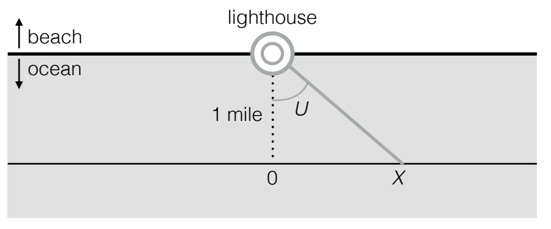
풀이. 그림 8.1의 직각삼각형에서 \(U\)의 대변 길이를 인접변 길이로 나누면 \(X/1=X\)이므로
\[X=\tan(U).\]
그림은 \(U>0\)이고 이에 따라 \(X>0\)인 경우를 나타내지만 \(U\le0\)일 때도 같은 관계가 성립한다. \(x\)를 가능한 \(X\)의 값, \(u\)를 이에 대응하는 가능한 \(U\)의 값이라 하자. 그러면
\[x=\tan(u),\qquad u=\arctan(x).\]
\(\tan\)은 \((-\pi/2,\pi/2)\)에서 미분 가능하고 엄격히 증가하므로 변수변환 공식에 의해
\[f_X(x)=f_U(u)\frac{du}{dx}=\frac1\pi\cdot\frac1{1+x^2}.\]
따라서 \(X\)는 코시 분포를 따른다. 특히 이는 \(E|X|\)가 무한함을 뜻한다. 코시 분포의 기댓값은 존재하지 않기 때문이다. 따라서 평균적으로 \(X\)는 직선의 원점에서 무한히 멀리 떨어져 있다!3
\(X\)가 코시 분포라는 사실은 균등분포의 보편성에 비추어 보아도 납득이 된다. 예제 7.1.25에서 보았듯 코시 누적분포함수는
\[F(x)=\frac1\pi\arctan(x)+0.5\]
이다. 그 역함수는 \(F^{-1}(v)=\tan(\pi(v-0.5))\)이므로 \(V\sim\operatorname{Unif}(0,1)\)에 대해
\[F^{-1}(V)=\tan(\pi(V-0.5))\sim\operatorname{Cauchy}.\]
\(\pi(V-0.5)\sim\operatorname{Unif}(-\pi/2,\pi/2)\)이므로 이는 앞에서 얻은 결과와 일치한다. \(\square\)
변수변환 공식은 위치-척도 변환의 확률밀도함수를 구하는 데도 쓸 수 있다.
예제 8.1.6 (위치-척도 변환의 확률밀도함수). \(X\)의 확률밀도함수가 \(f_X\)이고 \(Y=a+bX\)이며 \(b\ne0\)이라 하자. \(Y\)와 \(X\) 사이의 관계에 대응하도록 \(y=a+bx\)라 하자. 그러면 \(dy/dx=b\)이므로 \(Y\)의 확률밀도함수는
\[f_Y(y)=f_X(x)\left|\frac{dx}{dy}\right|=f_X\left(\frac{y-a}{b}\right)\frac1{|b|}.\qquad\square\]
변수변환 공식은 \(n\)차원으로 일반화된다. 여기서는 확률벡터 \(\mathbf X\)의 결합확률밀도함수를 이용해 변환된 확률벡터 \(\mathbf Y=g(\mathbf X)\)의 결합확률밀도함수를 구하는 방법을 알려 준다. 공식은 일차원 형태와 유사하지만, 도함수를 다변량으로 일반화한 야코비 행렬이 등장한다. 야코비 행렬에 대한 자세한 내용은 수학 부록 A.6절과 A.7절을 보라.
정리 8.1.7 (변수변환). \(\mathbf X=(X_1,\ldots,X_n)\)이 결합확률밀도함수 \(f_{\mathbf X}\)를 갖는 연속확률벡터라 하자. \(g:A_0\to B_0\)가 가역함수라고 하자. 여기서 \(A_0,B_0\)는 \(\mathbb R^n\)의 열린 부분집합이고,4 \(A_0\)는 \(\mathbf X\)의 지지집합을 포함하며 \(B_0\)는 \(g\)의 치역이다.
\(\mathbf Y=g(\mathbf X)\)라 하고 이에 맞추어 \(\mathbf y=g(\mathbf x)\)라 쓰자. \(g\)가 가역이므로 \(\mathbf X=g^{-1}(\mathbf Y)\)이고 \(\mathbf x=g^{-1}(\mathbf y)\)이기도 하다.
모든 편도함수 \(\partial x_i/\partial y_j\)가 존재하고 연속이어서 야코비 행렬
\[ \frac{\partial\mathbf x}{\partial\mathbf y}= \begin{pmatrix} \dfrac{\partial x_1}{\partial y_1}&\dfrac{\partial x_1}{\partial y_2}&\cdots&\dfrac{\partial x_1}{\partial y_n}\\ \vdots&\vdots&\ddots&\vdots\\ \dfrac{\partial x_n}{\partial y_1}&\dfrac{\partial x_n}{\partial y_2}&\cdots&\dfrac{\partial x_n}{\partial y_n} \end{pmatrix} \]
을 만들 수 있다고 하자. 또한 이 야코비 행렬의 행렬식이 어디에서도 0이 아니라고 가정하자. 그러면 \(\mathbf Y\)의 결합확률밀도함수는
\[f_{\mathbf Y}(\mathbf y)=f_{\mathbf X}\!\left(g^{-1}(\mathbf y)\right)\cdot\left|\det\left(\frac{\partial\mathbf x}{\partial\mathbf y}\right)\right|,\qquad\mathbf y\in B_0,\]
이고 그 밖에서는 0이다. 야코비 행렬을 감싼 안쪽 막대는 행렬식을 취하라는 뜻이고 바깥쪽 막대는 절댓값을 취하라는 뜻이다.
즉 \(f_{\mathbf X}(\mathbf x)\)를 \(f_{\mathbf Y}(\mathbf y)\)로 바꾸려면 \(f_{\mathbf X}(\mathbf x)\)의 \(\mathbf x\)를 \(\mathbf y\)로 표현한 다음 야코비 행렬 \(\partial\mathbf x/\partial\mathbf y\)의 행렬식의 절댓값을 곱한다.
일차원에서와 마찬가지로
\[\det\left(\frac{\partial\mathbf x}{\partial\mathbf y}\right)=\left[\det\left(\frac{\partial\mathbf y}{\partial\mathbf x}\right)\right]^{-1}\]
이므로 두 야코비 행렬 중 더 쉽게 계산할 수 있는 것을 구한 다음 최종적으로 \(\mathbf Y\)의 결합확률밀도함수를 \(\mathbf y\)의 함수로 표현하면 된다.5
여기서는 변수변환 공식을 증명하지 않겠지만, 핵심 생각은 다변수 미적분의 변수변환 공식과 다음 사실을 이용하는 것이다. \(A\)가 \(A_0\) 안의 영역이고 \(B=\{g(\mathbf x):\mathbf x\in A\}\)가 \(B_0\)의 대응하는 영역이면 \(\mathbf X\in A\)와 \(\mathbf Y\in B\)는 같은 사건이다. 따라서 \(P(\mathbf X\in A)=P(\mathbf Y\in B)\)이며,
\[\int_A f_{\mathbf X}(\mathbf x)\,d\mathbf x=\int_B f_{\mathbf Y}(\mathbf y)\,d\mathbf y.\]
그다음 왼쪽 적분에 치환 \(\mathbf x=g^{-1}(\mathbf y)\)를 적용하여 다변수 미적분의 변수변환 공식을 사용하면 된다. 이 공식은 수학 부록에서 복습한다.
주의 8.1.8. 이산확률변수의 변환과 연속확률변수의 변환 사이에는 중요한 개념적 차이가 있다. 이산확률변수에는 야코비 행렬이 필요하지 않지만 연속확률변수에는 필요하다. 예를 들어 \(X\)를 양의 확률변수로 두고 \(Y=X^3\)이라 하자. \(X\)가 이산형이면
\[P(Y=y)=P(X=y^{1/3})\]
으로 확률질량함수 사이를 변환한다. 그러나 \(X\)가 연속형이면 확률밀도함수 사이를 변환하는 데 야코비 행렬, 일차원에서는 도함수만 필요하다.
\[f_Y(y)=f_X(x)\frac{dx}{dy}=f_X(y^{1/3})\frac1{3y^{2/3}}.\]
연습문제 23은 야코비 행렬이 필요한 상황에서 이를 사용하지 않은 사람에 대한 경고 이야기이다.
다음 두 예제에서는 2차원 변수변환 공식을 적용한다.
예제 8.1.9 (박스-뮐러). \(U\sim\operatorname{Unif}(0,2\pi)\)이고 \(T\sim\operatorname{Expo}(1)\)이며 서로 독립이라고 하자. 다음을 정의한다.
\[X=\sqrt{2T}\cos U,\qquad Y=\sqrt{2T}\sin U.\]
\((X,Y)\)의 결합확률밀도함수를 구하라. \(X,Y\)는 독립인가? 각각의 주변분포는 무엇인가?
풀이. \(U,T\)의 결합확률밀도함수는 \(u\in(0,2\pi)\)이고 \(t>0\)일 때
\[f_{U,T}(u,t)=\frac1{2\pi}e^{-t}\]
이다. \((X,Y)\)를 평면 위의 한 점으로 보면
\[X^2+Y^2=2T(\cos^2U+\sin^2U)=2T\]
는 원점에서 떨어진 거리의 제곱이고 \(U\)는 각도이다. 즉 \((\sqrt{2T},U)\)는 \((X,Y)\)를 극좌표로 표현한 것이다.
\((X,Y)\)에서 \((U,T)\)를 복원할 수 있으므로 이 변환은 가역이다.6 야코비 행렬
\[ \frac{\partial(x,y)}{\partial(u,t)}= \begin{pmatrix} -\sqrt{2t}\sin u & \dfrac{\cos u}{\sqrt{2t}}\\ \sqrt{2t}\cos u & \dfrac{\sin u}{\sqrt{2t}} \end{pmatrix} \]
은 존재하고 각 성분이 연속이며, 그 행렬식의 절댓값은 \(|-\sin^2u-\cos^2u|=1\)로 결코 0이 아니다. 이제 \((U,T)\)에서 \((X,Y)\)로의 변환에 맞추어 \(x=\sqrt{2t}\cos u\), \(y=\sqrt{2t}\sin u\)로 두면
\[ \begin{aligned} f_{X,Y}(x,y)&=f_{U,T}(u,t)\left|\det\frac{\partial(u,t)}{\partial(x,y)}\right|\\ &=\frac1{2\pi}e^{-t}\cdot1 =\frac1{2\pi}e^{-(x^2+y^2)/2}\\ &=\frac1{\sqrt{2\pi}}e^{-x^2/2}\cdot\frac1{\sqrt{2\pi}}e^{-y^2/2}, \end{aligned} \]
이는 모든 실수 \(x,y\)에 대해 성립한다. 결합확률밀도함수 \(f_{X,Y}\)가 \(x\)의 함수와 \(y\)의 함수의 곱으로 분해되므로 \(X,Y\)는 독립이다. 더 나아가 결합확률밀도함수가 두 표준정규 확률밀도함수의 곱임을 알 수 있으므로 \(X,Y\)는 i.i.d. \(\mathcal N(0,1)\) 확률변수이다! 이 결과를 정규 확률변수를 생성하는 박스-뮐러 방법이라고 한다. \(\square\)
예제 8.1.10 (이변량 정규 결합확률밀도함수). 7장에서는 이변량 정규분포의 몇 가지 성질을 살펴보고 결합 적률생성함수를 구했다. 이제 결합확률밀도함수를 구하자.
\((Z,W)\)가 이변량 정규분포를 따르고 각 주변분포가 \(\mathcal N(0,1)\)이며 \(\operatorname{Corr}(Z,W)=\rho\)라 하자. 주변분포가 표준정규분포가 아닌 경우의 결합확률밀도함수를 구하려면 각 성분을 따로 표준화한 후 아래 결과를 사용할 수 있다. \(-1<\rho<1\)이라고 가정하자. 그렇지 않으면 \(Z,W\)가 완벽하게 상관되어 분포가 퇴화하기 때문이다.
예제 7.5.10에서 보였듯 \((Z,W)\)는
\[Z=X,\qquad W=\rho X+\tau Y\]
로 구성할 수 있다. 여기서 \(\tau=\sqrt{1-\rho^2}\)이고 \(X,Y\)는 i.i.d. \(\mathcal N(0,1)\)이다. 역변환도 필요하다. \(Z=X\)에서 \(X=Z\)이다. 이를 \(W=\rho X+\tau Y\)에 대입하고 \(Y\)에 대해 풀면
\[X=Z,\qquad Y=-\frac\rho\tau Z+\frac1\tau W.\]
야코비 행렬은
\[\frac{\partial(x,y)}{\partial(z,w)}= \begin{pmatrix}1&0\\-\rho/\tau&1/\tau\end{pmatrix},\]
그 행렬식의 절댓값은 \(1/\tau\)이다. 따라서 변수변환 공식에 의해 모든 실수 \(z,w\)에 대해
\[ \begin{aligned} f_{Z,W}(z,w)&=f_{X,Y}(x,y)\left|\det\frac{\partial(x,y)}{\partial(z,w)}\right|\\ &=\frac1{2\pi\tau}\exp\left(-\frac12(x^2+y^2)\right)\\ &=\frac1{2\pi\tau}\exp\left[-\frac12\left(z^2+\left(-\frac\rho\tau z+\frac1\tau w\right)^2\right)\right]\\ &=\frac1{2\pi\tau}\exp\left[-\frac1{2\tau^2}(z^2+w^2-2\rho zw)\right]. \end{aligned} \]
마지막 단계에서는 전개한 뒤 \(\rho^2+\tau^2=1\)이라는 사실을 이용했다. \(\square\)
8.2 합성곱
합성곱은 독립인 확률변수들의 합이다. 앞에서 언급했듯 독립인 확률변수들을 더하는 이유는 합이 실험을 유용하게 요약하기 때문이고(\(n\)번의 베르누이 시행에서 전체 성공 횟수에만 관심이 있을 수 있다), 합을 통해 역시 유용한 평균을 얻을 수 있기 때문이다(\(n\)번의 베르누이 시행에서 성공의 비율).
이 절의 주된 과제는 분포가 알려진 독립 확률변수 \(X,Y\)에 대해 \(T=X+Y\)의 분포를 알아내는 것이다. 앞의 장들에서는 이야기를 이용하는 방법과 적률생성함수를 이용하는 방법이 이 과제에 어떻게 도움이 되는지 이미 보았다. 예를 들어 성공 확률이 같은 독립 이항 확률변수들의 합은 이항분포를 따르고, 독립이고 동일한 분포를 따르는 기하 확률변수들의 합은 음이항분포를 따른다는 사실을 이야기를 이용해 보였다. 또한 독립 정규 확률변수들의 합이 정규분포를 따른다는 사실을 적률생성함수로 보였다.
\(T\)의 분포를 구하는 세 번째 방법은 합성곱 합 또는 합성곱 적분을 사용하는 것이다. 공식은 다음 정리에 나온다. 앞으로 보겠지만 합성곱 합은 \(X\) 또는 \(Y\)의 값을 조건으로 삼는 전체 확률의 법칙에 지나지 않으며, 합성곱 적분도 그와 유사하다.
정리 8.2.1 (합성곱 합과 적분). \(X,Y\)를 독립 확률변수, \(T=X+Y\)를 그 합이라 하자. \(X,Y\)가 이산형이면 \(T\)의 확률질량함수는
\[ \begin{aligned} P(T=t)&=\sum_x P(Y=t-x)P(X=x)\\ &=\sum_y P(X=t-y)P(Y=y). \end{aligned} \]
\(X,Y\)가 연속형이면 \(T\)의 확률밀도함수는7
\[ \begin{aligned} f_T(t)&=\int_{-\infty}^{\infty}f_Y(t-x)f_X(x)\,dx\\ &=\int_{-\infty}^{\infty}f_X(t-y)f_Y(y)\,dy. \end{aligned} \]
증명. 이산형인 경우 \(X\)를 조건으로 삼아 전체 확률의 법칙을 사용한다.
\[ \begin{aligned} P(T=t)&=\sum_x P(X+Y=t\mid X=x)P(X=x)\\ &=\sum_x P(Y=t-x\mid X=x)P(X=x)\\ &=\sum_x P(Y=t-x)P(X=x). \end{aligned} \]
대신 \(Y\)를 조건으로 삼으면 \(T\)의 확률질량함수에 대한 두 번째 공식을 얻는다.
주의 8.2.2. 마지막 단계에서 \(P(Y=t-x\mid X=x)\)를 \(P(Y=t-x)\)로 바꾸기 위해 \(X\)와 \(Y\)가 독립이라는 가정을 사용한다. 양의 확률을 갖는 모든 \(x\)에 대해 \(X=x\)가 주어졌을 때의 \(Y\)의 조건부분포가 \(Y\)의 주변분포와 같으면 \(X\)와 \(Y\)는 독립이며, 이 경우 각 조건을 제거할 수 있다. 특정한 \(x\) 하나에서 두 분포가 같다는 사실만으로는 독립을 결론낼 수 없다. 흔히 \(X\)에 \(x\)를 대입했으니 \(X=x\)라는 정보를 “이미 사용했다”고 생각하는 실수를 한다. 조건을 제거하려면 그것을 정당화할 근거가 필요하다. 그렇지 않으면 정당한 근거 없이 정보를 없애 버리는 것이다.
연속형인 경우에는 한 점에서의 확률밀도함숫값이 확률이 아니므로, 먼저 누적분포함수를 구한 다음 미분하여 확률밀도함수를 얻는다. 전체 확률의 법칙에 의해
\[ \begin{aligned} F_T(t)&=P(X+Y\le t)\\ &=\int_{-\infty}^{\infty}P(X+Y\le t\mid X=x)f_X(x)\,dx\\ &=\int_{-\infty}^{\infty}P(Y\le t-x)f_X(x)\,dx\\ &=\int_{-\infty}^{\infty}F_Y(t-x)f_X(x)\,dx. \end{aligned} \]
여기서도 조건 \(X=x\)를 제거하기 위해 독립성이 필요하다. 확률밀도함수를 얻으려면 적분과 미분의 순서를 바꾸어 \(t\)에 관해 미분한다.8 그러면
\[f_T(t)=\int_{-\infty}^{\infty}f_Y(t-x)f_X(x)\,dx\]
를 얻는다. 대신 \(Y\)를 조건으로 삼으면 \(f_T\)에 대한 두 번째 공식을 얻는다.
다른 유도 방법으로 2차원의 변수변환 공식을 사용할 수 있다. 한 가지 걸림돌은 변수변환 공식이 \(\mathbb R^2\)에서 \(\mathbb R^2\)로 가는 가역변환을 요구하는데, \((X,Y)\mapsto X+Y\)는 \(\mathbb R^2\)에서 \(\mathbb R\)로 가는 변환이어서 가역이 아니라는 것이다. 변환에 불필요한 성분 하나를 더해 가역으로 만들면 이를 해결할 수 있다. 따라서 가역변환 \((X,Y)\mapsto(X+Y,X)\)를 생각한다. \((X,Y)\mapsto(X+Y,Y)\)를 사용해도 똑같이 타당하다. \(X+Y\)와 \(X\)의 결합확률밀도함수를 구한 후에는 \(X\)에 대해 적분하여 \(X+Y\)의 주변 확률밀도함수를 얻는다.
\(T=X+Y\), \(W=X\)로 두고 \(t=x+y\), \(w=x\)라 하자. \(X\)에 ‘\(W\)’라는 새 이름을 붙이는 것이 불필요해 보일 수 있지만, 이렇게 하면 변환 전 변수와 변환 후 변수를 더 쉽게 구별할 수 있다. 즉 \((X,Y)\mapsto(T,W)\)로 변환하는 것이다. 그러면
\[\frac{\partial(t,w)}{\partial(x,y)}=\begin{pmatrix}1&1\\1&0\end{pmatrix}\]
의 행렬식의 절댓값은 1이므로 \(\left|\frac{\partial(x,y)}{\partial(t,w)}\right|\)도 1이다. 따라서 \(T,W\)의 결합확률밀도함수는
\[f_{T,W}(t,w)=f_{X,Y}(x,y)=f_X(x)f_Y(y)=f_X(w)f_Y(t-w)\]
이고, \(T\)의 주변 확률밀도함수는
\[f_T(t)=\int_{-\infty}^{\infty}f_{T,W}(t,w)\,dw=\int_{-\infty}^{\infty}f_X(x)f_Y(t-x)\,dx\]
이다. 이는 위에서 얻은 결과와 일치한다. \(\blacksquare\)
주의 8.2.3. 다음 식의 유추로부터 합성곱 적분 공식을 기억하는 것은 어렵지 않다.
\[P(T=t)=\sum_x P(Y=t-x)P(X=x)\]
에서
\[f_T(t)=\int_{-\infty}^{\infty}f_Y(t-x)f_X(x)\,dx\]
로 넘어가면 된다. 하지만 여전히 조심해야 한다. 예를 들어 연습문제 23은 독립인 두 연속확률변수의 곱의 확률밀도함수에 대해 이와 비슷해 보이는 공식이 틀리다는 것을 보여 준다. 야코비안이 필요하기 때문이다. 합성곱에서는 야코비 행렬식의 절댓값이 1이므로 합성곱 적분 공식에서 그것이 눈에 띄지 않는다.
합성곱 합은 전체 확률의 법칙일 뿐이므로, 우리는 앞의 장들에서 ‘합성곱’이라는 단어를 쓰지 않고도 이미 합성곱 합을 사용했다. 예를 들어 정리 3.8.9(독립 이항 확률변수의 합)의 첫 번째이자 가장 번거로운 증명과 정리 4.8.1(독립 포아송 확률변수의 합)의 증명을 보라.
다음 예제들에서는 합성곱 적분을 이용해 지수 확률변수들의 합과 균등 확률변수들의 합의 분포를 구한다.
예제 8.2.4 (지수분포의 합성곱). \(X,Y\overset{\text{i.i.d.}}{\sim}\operatorname{Expo}(\lambda)\)라 하자. \(T=X+Y\)의 분포를 구하라.
풀이. \(t>0\)에 대해 합성곱 공식은
\[ f_T(t)=\int_{-\infty}^{\infty}f_Y(t-x)f_X(x)\,dx =\int_0^t\lambda e^{-\lambda(t-x)}\lambda e^{-\lambda x}\,dx \]
를 준다. 적분 안의 확률밀도함숫값이 0이 아니려면 \(t-x>0\)이고 \(x>0\)이어야 하므로 적분 범위를 0부터 \(t\)까지로 제한했다. 식을 간단히 하면
\[f_T(t)=\lambda^2\int_0^t e^{-\lambda t}\,dx=\lambda^2te^{-\lambda t},\qquad t>0.\]
이는 \(\operatorname{Gamma}(2,\lambda)\) 분포로 알려져 있다. 감마분포는 8.4절에서 자세히 소개한다. \(\square\)
예제 8.2.5 (균등분포의 합성곱). \(X,Y\overset{\text{i.i.d.}}{\sim}\operatorname{Unif}(0,1)\)이라 하자. \(T=X+Y\)의 분포를 구하라.
풀이. \(X\)(그리고 \(Y\))의 확률밀도함수는
\[g(x)=\begin{cases}1,&x\in(0,1),\\0,&\text{그 밖의 경우}\end{cases}\]
이다. 합성곱 공식에 따라
\[f_T(t)=\int_{-\infty}^{\infty}f_Y(t-x)f_X(x)\,dx=\int_{-\infty}^{\infty}g(t-x)g(x)\,dx.\]
피적분함수는 \(0<t-x<1\)이고 \(0<x<1\)일 때, 그리고 그때에만 1이다. 이 조건이 나타내는 영역은 평행사변형 모양이다. 동등하게 이 조건은 \(\max(0,t-1)<x<\min(t,1)\)이다.
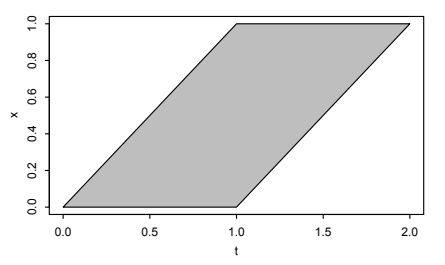
그림 8.2에서 \(0<t\le1\)일 때 \(x\)는 \((0,t)\)에 있어야 하고, \(1<t<2\)일 때는 \((t-1,1)\)에 있어야 함을 알 수 있다. 따라서 \(T\)의 확률밀도함수는 구간별 선형함수이다.
\[ f_T(t)=\begin{cases} \displaystyle\int_0^t dx=t,&0<t\le1,\\[5pt] \displaystyle\int_{t-1}^1 dx=2-t,&1<t<2,\\[5pt] 0,&\text{그 밖의 경우}. \end{cases} \]
그림 8.3은 \(T\)의 확률밀도함수를 그린 것이다. 0, 1, 2를 꼭짓점으로 하는 삼각형 모양이므로 이를 \(\operatorname{Triangle}(0,1,2)\) 분포라고 부른다.
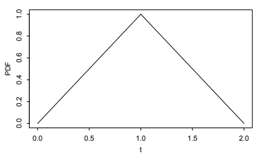
직관적으로 \(T\)는 양극단 근처보다 중간 근처의 값을 가질 가능성이 더 높다는 것이 납득된다. 1 근처의 값은 \(X,Y\)가 둘 다 중간 정도일 때, \(X\)가 크지만 \(Y\)가 작을 때, 또는 \(Y\)가 크지만 \(X\)가 작을 때 얻을 수 있다. 반면 2 근처의 값은 \(X,Y\)가 둘 다 클 때만 가능하다. 예제 3.2.5를 떠올려 보면 주사위 두 번의 눈의 합에 대한 확률질량함수도 삼각형 모양이었다. 주사위 한 번의 눈은 1부터 6까지의 정수 위의 이산균등분포를 따르므로, 그 문제에서 우리는 이산균등 확률변수 두 개의 합성곱을 살펴본 것이었다. 여기서 얻은 확률밀도함수의 모양이 비슷하다는 것은 타당하다. \(\square\)
8.3 베타 분포
이 절과 다음 절에서는 연속분포 두 가지인 베타 분포와 감마분포를 소개한다. 두 분포는 앞에서 이미 공부한 몇몇 이름 붙은 분포와 관계가 있고, 하나의 공통된 이야기를 통해 서로도 연결된다. 이는 변환이라는 주제에서 잠시 벗어나는 부분이지만, 결국 베타 분포와 감마분포를 연결하기 위해 변수변환을 이용해야 한다.
베타 분포는 구간 \((0,1)\) 위의 연속분포이다. 이는 \(\operatorname{Unif}(0,1)\) 분포를 일반화한 것으로, \((0,1)\)에서 확률밀도함수가 상수가 아닐 수도 있다.
정의 8.3.1 (베타 분포). \(a>0\), \(b>0\)인 모수 \(a,b\)에 대해 확률변수 \(X\)의 확률밀도함수가
\[f(x)=\frac{1}{\beta(a,b)}x^{a-1}(1-x)^{b-1},\qquad 0<x<1,\]
이면 \(X\)가 모수 \(a,b\)인 베타 분포를 따른다고 한다. 여기서 상수 \(\beta(a,b)\)는 확률밀도함수의 적분값이 1이 되도록 정한다. 이를 \(X\sim\operatorname{Beta}(a,b)\)로 쓴다.
\(a=b=1\)로 두면 \(\operatorname{Beta}(1,1)\)의 확률밀도함수는 \((0,1)\)에서 상수이므로 \(\operatorname{Beta}(1,1)\)과 \(\operatorname{Unif}(0,1)\)은 같은 분포이다. \(a\)와 \(b\)의 값을 바꾸면 여러 모양의 확률밀도함수를 얻는다. 그림 8.4에 네 가지 예가 있다. 일반적인 양상 두 가지는 다음과 같다.
- \(a<1\)이고 \(b<1\)이면 확률밀도함수는 위로 열린 U자 모양이다. \(a>1\)이고 \(b>1\)이면 아래로 열린 모양이다.
- \(a=b\)이면 확률밀도함수는 \(1/2\)을 중심으로 대칭이다. \(a>b\)이면 \(1/2\)보다 큰 값 쪽에, \(a<b\)이면 \(1/2\)보다 작은 값 쪽에 치우친다.
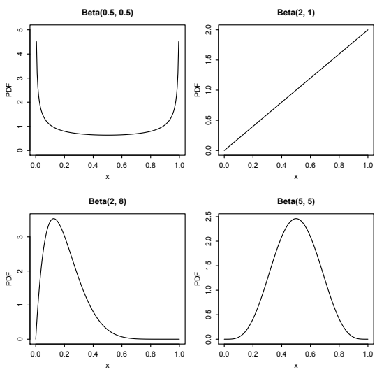
정의에 따라 상수 \(\beta(a,b)\)는 다음을 만족한다.
\[\beta(a,b)=\int_0^1 x^{a-1}(1-x)^{b-1}\,dx.\]
이 형태의 적분을 베타 적분이라 하며, \(\beta(a,b)\)의 일반적인 공식을 유도하려면 미적분을 사용해야 한다. 그러나 \(a,b\)가 양의 정수인 특수한 경우에 토머스 베이즈는 미적분 대신 이야기를 이용한 증명으로 이 적분을 계산하는 방법을 알아냈다!
이야기 8.3.2 (베이즈의 당구). \(0\le k\le n\)인 정수 \(k,n\)에 대해 다음을 미적분을 이용하지 않고 보여라.
\[\int_0^1\binom nk x^k(1-x)^{n-k}\,dx=\frac1{n+1}.\]
풀이. 두 가지 이야기를 이용하여 좌변과 우변이 모두 \(P(X=k)\)와 같음을 보일 것이다. 여기서 \(X\)는 우리가 구성할 확률변수이다.
이야기 1: 공 \(n+1\)개, 즉 흰 공 \(n\)개와 회색 공 하나에서 시작한다. 공의 위치들이 독립이고 동일하게 \(\operatorname{Unif}(0,1)\)을 따르도록 각 공을 단위구간 \([0,1]\) 위에 무작위로 던진다. 회색 공의 왼쪽에 놓인 흰 공의 수를 \(X\)라 하자. \(X\)는 가능한 값이 \(0,1,\ldots,n\)인 이산확률변수이다. 그림 8.5에 실험의 구성이 나와 있다.
사건 \(X=k\)의 확률을 구하기 위해 전체 확률의 법칙을 사용하고 회색 공의 위치를 조건으로 삼는다. 이 위치를 \(B\)라 하자. \(B=p\)라는 조건 아래에서 \(p\)의 왼쪽에 놓이는 흰 공의 수는 \(\operatorname{Bin}(n,p)\) 분포를 따른다. 각 흰 공을 독립인 베르누이 시행으로 보고 \(p\)의 왼쪽에 놓이는 것을 성공으로 정의할 수 있기 때문이다. \(B\)의 확률밀도함수를 \(f\)라 하자. \(B\sim\operatorname{Unif}(0,1)\)이므로 \(f(p)=1\)이다. 따라서
\[P(X=k)=\int_0^1P(X=k\mid B=p)f(p)\,dp=\int_0^1\binom nk p^k(1-p)^{n-k}\,dp.\]
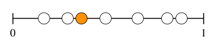
이야기 2: 공 \(n+1\)개를 모두 흰색으로 준비한다. 각 공을 단위구간에 무작위로 던진 다음 공 하나를 무작위로 골라 회색으로 칠한다. 다시 회색 공의 왼쪽에 놓인 흰 공의 수를 \(X\)라 하자. 대칭성에 따라 \(n+1\)개 공 중 어느 공이든 회색으로 칠해질 가능성이 같으므로
\[P(X=k)=\frac1{n+1},\qquad k=0,1,\ldots,n.\]
핵심은 두 이야기에서 \(X\)의 분포가 같다는 것이다! 회색 공을 먼저 칠하고 던지든, 먼저 던지고 회색으로 칠하든 차이가 없다. 따라서 이야기 1과 이야기 2에서 \(P(X=k)\)는 같으며
\[\int_0^1\binom nk p^k(1-p)^{n-k}\,dp=\frac1{n+1},\qquad k=0,1,\ldots,n.\]
피적분함수에 \(k\)가 들어 있음에도 적분값은 \(k\)에 의존하지 않는다. \(k\)에 \(a-1\)을, \(n-k\)에 \(b-1\)을 대입하면 양의 정수 \(a,b\)에 대해
\[\beta(a,b)=\frac{1}{(a+b-1)\binom{a+b-2}{a-1}}=\frac{(a-1)!(b-1)!}{(a+b-1)!}.\]
이 장의 뒷부분에서 일반적인 \(a,b\)에 대해 \(\beta(a,b)\)가 무엇인지 배울 것이다. \(\square\)
베타 분포는 \((0,1)\) 위의 유연한 분포 계열이며 여러 이야기를 가지고 있다. 그중 하나는 베타 확률변수를 미지의 확률을 나타내는 데 자주 사용한다는 것이다. 즉 베타 분포를 사용하여 미지의 확률에 확률을 부여할 수 있다!
이야기 8.3.3 (베타-이항 켤레성). 앞면이 나올 확률이 \(p\)인 동전이 있지만 우리는 \(p\)가 얼마인지 모른다. 목표는 동전을 \(n\)번 던진 결과를 관찰한 후 \(p\)의 값을 추론하는 것이다. \(n\)이 클수록 \(p\)를 더 정확하게 추정할 수 있어야 한다.
이를 다루는 방법은 여러 가지이다. 중요한 접근법 하나는 알려지지 않은 모든 양을 확률변수로 취급하는 베이즈 추론이다. 베이즈 접근법에서는 미지의 확률 \(p\)를 확률변수로 취급하고 \(p\)에 분포를 부여한다. 이를 사전분포라 하며, 동전 던지기를 관찰하기 전 \(p\)의 참값에 대한 우리의 불확실성을 나타낸다. 실험을 수행하고 데이터를 모은 후에는 베이즈 정리를 사용해 사전분포를 갱신한다. 그 결과 얻는 사후분포는 \(p\)에 대한 새로운 믿음을 나타낸다.
\(p\)의 사전분포가 베타 분포이면 어떻게 되는지 살펴보자. 알려진 상수 \(a,b\)에 대해 \(p\sim\operatorname{Beta}(a,b)\)라 하고 동전 \(n\)번을 던졌을 때 앞면이 나온 횟수를 \(X\)라 하자. \(p\)의 참값이 주어지면 동전 던지기들은 성공 확률이 \(p\)인 독립 베르누이 시행이므로
\[X\mid p\sim\operatorname{Bin}(n,p).\]
\(X\)의 주변분포는 일반적으로 이항분포가 아니라는 점에 유의하자. 예외적으로 \(n=1\)이면 베르누이분포이다. \(X\)는 \(p\)가 주어졌을 때 조건부로 이항분포를 따른다. \(X\)의 주변분포를 베타-이항분포라고 부른다. \(p\)의 사후분포를 구하기 위해 베이즈 정리를 사용한다. \(X\)는 이산형이고 \(p\)는 연속형이므로 혼합형을 사용한다. 사전분포의 밀도를 \(f(p)\), 앞면이 \(k\)번 나온 것을 관찰한 후의 사후분포 밀도를 \(f(p\mid X=k)\)라 하면
\[ \begin{aligned} f(p\mid X=k)&=\frac{P(X=k\mid p)f(p)}{P(X=k)}\\ &=\frac{\binom nk p^k(1-p)^{n-k}\cdot\frac1{\beta(a,b)}p^{a-1}(1-p)^{b-1}}{P(X=k)}. \end{aligned} \]
분모는 \(X\)의 주변 확률질량함수로, 다음과 같다.
\[P(X=k)=\int_0^1P(X=k\mid p)f(p)\,dp=\int_0^1\binom nk p^k(1-p)^{n-k}f(p)\,dp.\]
\(a=b=1\)이면 \(p\)의 사전분포가 \(\operatorname{Unif}(0,1)\)이 된다. 이때 베이즈의 당구 이야기에서 \(P(X=k)=1/(n+1)\), 즉 \(X\)가 \(\{0,1,\ldots,n\}\) 위의 이산균등분포를 따름을 보였다. \(a,b\)가 임의의 양의 정수일 때도 베이즈의 당구를 다시 이용하여 \(P(X=k)\)를 구할 수 있다. 흥미롭게도 이 경우 \(X\)는 음초기하분포를 따른다. 그 이야기와 확률질량함수는 예제 4.4.7에서 보았다.
그러나 일반적인 실수 \(a,b\)에 대해 \(P(X=k)\)를 구하기는 쉽지 않아 보인다. 이와 관련해 \(\beta(a,b)\)도 아직 일반적인 경우에 계산하지 않았다. 막다른 길에 이른 것일까?
사실 계산은 처음 보이는 것보다 훨씬 쉽다. 조건부 확률밀도함수 \(f(p\mid X=k)\)는 \(p\)의 함수이므로 \(p\)에 의존하지 않는 것은 모두 상수일 뿐이다. 이 상수들을 모두 생략하고 곱셈 상수를 제외한 밀도를 구할 수 있다. 그 후 정규화 상수는 밀도의 적분값이 1이 되도록 정하면 된다. 그러면
\[f(p\mid X=k)\propto p^{a+k-1}(1-p)^{b+n-k-1}\]
을 얻는데, 이는 곱셈 상수를 제외하면 \(\operatorname{Beta}(a+k,b+n-k)\) 확률밀도함수이다. 따라서 \(p\)의 사후분포는
\[p\mid X=k\sim\operatorname{Beta}(a+k,b+n-k).\]
\(X=k\)를 관찰한 후에도 \(p\)의 사후분포는 여전히 베타 분포이다! 이것은 베타 분포와 이항분포 사이의 특별한 관계로, 켤레성이라 부른다. \(p\)의 사전분포가 베타 분포이고 데이터가 \(p\)가 주어졌을 때 조건부로 이항분포를 따르면, 사전분포에서 사후분포로 갈 때 베타 분포 계열을 벗어나지 않는다. 이때 베타 분포를 이항분포의 켤레 사전분포라고 한다.
더 나아가 \(p\)의 분포를 갱신하는 공식이 매우 간단하다는 점에 주목하자. 베타 분포의 첫 번째 모수에 관찰된 성공 횟수 \(k\)를 더하고, 두 번째 모수에는 관찰된 실패 횟수 \(n-k\)를 더하면 된다. 따라서 적어도 \(a,b\)가 양의 정수일 때 이 맥락에서 두 모수는 구체적으로 해석할 수 있다. \(a-1\)은 이전 실험에서 얻은 사전 성공 횟수로, \(b-1\)은 사전 실패 횟수로 생각하자. 이 이전 실험들은 실제일 수도 있고 가상일 수도 있다. 현재 실험의 성공 \(k\)회와 실패 \(n-k\)회를 더하면 성공은 \(a+k-1\)회, 실패는 \(b+n-k-1\)회가 되며, \(\operatorname{Beta}(a,b)\) 사전분포는 \(\operatorname{Beta}(a+k,b+n-k)\) 사후분포로 갱신된다.
2.6절에서처럼 증거가 점점 더 많이 생김에 따라 믿음을 순차적으로 갱신할 수 있다. 사전분포에서 시작해 이를 갱신하여 사후분포를 얻고, 그 사후분포가 새로운 사전분포가 되며, 이를 다시 갱신해 새로운 사후분포를 얻는 식이다. 아름다운 점은 이 모든 것을 베타 분포 계열 안에서 할 수 있고, 관찰된 성공과 실패를 세어 모수를 쉽게 갱신할 수 있다는 것이다.
구체적인 예로 그림 8.6은 사전분포가 \(\operatorname{Beta}(1,1)\)이고 동전을 \(n=5\)번 던져 우연히 모두 앞면이 나온 경우를 보여 준다. 앞에서 언급했듯 이 사전분포는 \(\operatorname{Unif}(0,1)\)과 같다. 이때 사후분포는 \(\operatorname{Beta}(6,1)\)이며 그림 8.6의 오른쪽에 나타나 있다. 사후분포가 동전 던지기의 증거를 어떻게 반영하는지 살펴보자. 앞면만 관찰했다는 사실과 부합하게 \(p\)가 클수록 밀도가 높다.
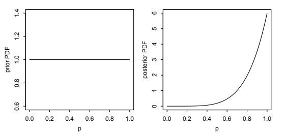
이 모형은 베이즈 정리의 첫 예제였던 예제 2.3.7의 연속형 대응물이다. 그 예제에서도 동전의 앞면 확률 \(p\)는 알려져 있지 않았지만, 사전 정보에 근거하여 \(p\)가 \(1/2\) 또는 \(3/4\) 두 값 중 하나만 가질 수 있다고 생각했다. 따라서 당시에는 그렇게 부르지 않았지만 \(p\)의 사전분포는 이산형이었다. 구체적으로 사전 확률질량함수는
\[P(p=1/2)=1/2,\qquad P(p=3/4)=1/2.\]
앞면이 세 번 연속으로 나오는 것을 관찰한 후 이 확률질량함수를 갱신하면 사후 확률질량함수는 \(p=1/2\)에 확률 \(0.23\), \(p=3/4\)에 확률 \(0.77\)을 부여했다. 이 장의 예제에도 같은 논리가 적용되지만, 이제는 \(p\)가 0과 1 사이의 어떤 값이든 될 수 있다고 생각할 때 적절한 연속 사전분포를 부여한다. \(\square\)
절을 마치면서 베타-이항 켤레성과 베이즈의 당구가 겉보기에 복잡한 문제를 훨씬 쉽게 만들어 줄 수 있음을 보여 주는 두 가지 예를 살펴보자.
예제 8.3.4 (베이즈의 혈청). 조건염이라는 질병을 위한 새로운 치료법인 베이즈의 혈청이 방금 개발되었다. 이 치료법의 효과를 연구하기 위해 임상시험을 실시하려고 한다. 조건염 환자 \(n\)명에게 베이즈의 혈청을 투여한다. \(p\)가 주어졌을 때 환자들의 결과는 독립이고, 각 환자가 치료로 완치될 확률은 \(p\)이다. 그러나 \(p\)는 알려져 있지 않다. \(p\)에 대한 불확실성을 정량화하기 위해 \(p\)를 확률변수로 모형화하고 사전분포를 \(p\sim\operatorname{Unif}(0,1)\)로 둔다.
\(n\)명의 환자 중 정확히 \(k\)명이 완치될 확률을 구하라. \(p\)가 주어진 조건부확률이 아니라 무조건부확률을 구한다.
이제 임상시험에서 치료법의 효과가 매우 뛰어나 환자 \(n\)명 모두가 완치되었다고 하자! 이 정보가 주어졌을 때 \(p\)가 \(1/2\)보다 클 확률을 구하라. 답을 완전히 간단히 하고 \(n\)만을 이용해 표현하라.
풀이. (a) 전체 확률의 법칙을 적용한 후 베이즈의 당구를 이용하거나 베타 확률밀도함수의 형태를 알아보면, 확률은
\[\int_0^1\binom nk p^k(1-p)^{n-k}\,dp=\frac1{n+1}.\]
- 베타-이항 켤레성에 따라 데이터가 주어졌을 때 \(p\)의 사후분포는 \(\operatorname{Beta}(1+n,1)\)이고, 확률밀도함수는 \(0<p<1\)에서 \((n+1)p^n\)이다. 따라서
\[P\left(p>\frac12\mid\text{모두 완치}\right)=\int_{1/2}^{1}(n+1)p^n\,dp=\left.p^{n+1}\right|_{1/2}^{1}=1-\frac1{2^{n+1}}.\qquad\square\]
예제 8.3.5. 한 농구 선수가 내일 경기에서 \(N\sim\operatorname{Pois}(\lambda)\)개의 자유투를 던질 것이다. 그녀가 \(j\)번째 자유투를 성공시키는 사건의 지시확률변수를 \(X_j\)라 하고 경기에서 성공한 자유투의 총수를 \(X=X_1+\cdots+X_N\)이라 하자. 따라서 \(N=0\)이면 \(X=0\)이다. 선수가 자유투를 얼마나 잘 던지는지에 대한 불확실성을 모형화하기 위해 \(p\sim\operatorname{Beta}(a,b)\)로 둔다. \(p\)가 주어졌을 때 선수가 자유투를 성공시킬 확률은 \(p\), 실패할 확률은 \(q=1-p\)이다. \(p\)가 주어졌을 때 \(X_1,X_2,\ldots\)는 조건부 독립이고, \(N\)은 \(p,X_1,X_2,\ldots\)와 독립이라고 가정한다.
\(N,p\)가 주어졌을 때 \(X\)의 조건부분포를 구하라.
\(p\)가 주어졌을 때 \(X\)의 조건부분포를 구하라.
\(a=b=1\)인 경우에 \(N\)이 주어졌을 때 \(X\)의 조건부분포를 구하라.
\(X,N\)이 주어졌을 때 \(p\)의 조건부분포를 구하라.
풀이. (a) 이항분포의 이야기에 따라 \(X\mid(N,p)\sim\operatorname{Bin}(N,p)\)이다.
닭과 달걀 이야기에 따라 \(X\mid p\sim\operatorname{Pois}(\lambda p)\)이다.
\(k=0,1,\ldots,n\)에 대해 전체 확률의 법칙과 베이즈의 당구를 이용하면
\[P(X=k\mid N=n)=\int_0^1\binom nk p^k(1-p)^{n-k}\,dp=\frac1{n+1}.\]
따라서 \(N\)이 주어졌을 때 \(X\)의 조건부분포는 \(\{0,1,\ldots,N\}\) 위의 이산균등분포이다.
- 베타-이항 켤레성에 따라 \(p\mid(X,N)\sim\operatorname{Beta}(a+X,b+N-X)\)이다. \(\square\)
8.4 감마분포
감마분포는 양의 실수 위의 연속분포로 지수분포를 일반화한다. 지수 확률변수가 무기억성 조건 아래 첫 번째 성공까지의 대기 시간을 나타내는 반면, 감마 확률변수는 여러 번의 성공까지 기다린 총시간을 나타냄을 볼 것이다.
확률밀도함수를 쓰기 전에 먼저 수학에서 매우 유명한 함수인 감마함수를 소개한다. 감마함수는 계승함수를 음이 아닌 정수의 범위 밖으로 확장한다.
정의 8.4.1 (감마함수). 감마함수 \(\Gamma\)는 실수 \(a>0\)에 대해 다음과 같이 정의된다.
\[\Gamma(a)=\int_0^\infty x^a e^{-x}\frac{dx}{x}.\]
\(x\)를 약분하여 적분함수를 \(x^{a-1}e^{-x}\)로 쓸 수도 있다. 그러나 \(u=cx\) 형태의 변환을 자주 하며, 이때 유용한 관계 \(du/u=dx/x\)가 성립하므로 \(dx/x\)를 남겨 두는 것이 편리하다. 감마함수에는 다음 두 가지 중요한 성질이 있다.
모든 \(a>0\)에 대해 \(\Gamma(a+1)=a\Gamma(a)\)이다. 부분적분으로 이를 알 수 있다.
\[\Gamma(a+1)=\int_0^\infty x^ae^{-x}\,dx =-x^ae^{-x}\bigg|_0^\infty+a\int_0^\infty x^{a-1}e^{-x}\,dx =0+a\Gamma(a).\]
\(n\)이 양의 정수이면 \(\Gamma(n)=(n-1)!\)이다. \(n=1\)에서 시작하여 점화 관계 \(\Gamma(a+1)=a\Gamma(a)\)를 사용하는 수학적 귀납법으로 증명할 수 있다. 따라서 감마함수를 양의 정수에서 계산하면 계승함수를 얻는다. 다만 인수가 1만큼 이동되어 있다.
이제 앞의 정의에서 양변을 갑자기 \(\Gamma(a)\)로 나누기로 했다고 하자. 그러면
\[1=\int_0^\infty\frac1{\Gamma(a)}x^ae^{-x}\frac{dx}{x}\]
이므로 적분 안의 함수는 \((0,\infty)\)를 지지집합으로 하는 유효한 확률밀도함수이다. 이것이 감마분포의 확률밀도함수에 대한 정의이다. 구체적으로 확률밀도함수가
\[f_X(x)=\frac1{\Gamma(a)}x^ae^{-x}\frac1x,\qquad x>0\]
이면 \(X\)가 모수 \(a\)와 1인 감마분포를 따른다고 하며 \(X\sim\operatorname{Gamma}(a,1)\)로 나타낸다.
\(\operatorname{Gamma}(a,1)\) 분포에서 척도 변환을 통해 일반적인 감마분포를 얻는다. \(X\sim\operatorname{Gamma}(a,1)\)이고 \(\lambda>0\)이면 \(Y=X/\lambda\)의 분포를 \(\operatorname{Gamma}(a,\lambda)\) 분포라고 한다. \(x=\lambda y\), \(dx/dy=\lambda\)인 변수변환 공식에 따라 \(Y\)의 확률밀도함수는
\[f_Y(y)=f_X(x)\left|\frac{dx}{dy}\right| =\frac1{\Gamma(a)}(\lambda y)^ae^{-\lambda y}\frac1{\lambda y}\lambda =\frac1{\Gamma(a)}(\lambda y)^ae^{-\lambda y}\frac1y,\qquad y>0.\]
이를 다음 정의로 정리한다.
정의 8.4.2 (감마분포). \(a>0\), \(\lambda>0\)인 모수 \(a,\lambda\)에 대해 확률변수 \(Y\)의 확률밀도함수가
\[f(y)=\frac1{\Gamma(a)}(\lambda y)^ae^{-\lambda y}\frac1y,\qquad y>0\]
이면 \(Y\)가 감마분포를 따른다고 하며 \(Y\sim\operatorname{Gamma}(a,\lambda)\)로 쓴다.
\(a=1\)로 놓으면 \(\operatorname{Gamma}(1,\lambda)\)의 확률밀도함수는 \(y>0\)에서 \(f(y)=\lambda e^{-\lambda y}\)이다. 따라서 \(\operatorname{Gamma}(1,\lambda)\)와 \(\operatorname{Expo}(\lambda)\)는 같은 분포이다. 추가 모수 \(a\) 덕분에 감마 확률밀도함수는 더 다양한 모양을 가질 수 있다. 그림 8.7은 감마 확률밀도함수 네 개를 보여 준다. \(a\)가 작으면 밀도함수가 한쪽으로 치우쳐 있지만 \(a\)가 커질수록 더 대칭적인 종 모양을 띠기 시작한다. 그 이유는 10장에서 배울 것이다. \(\operatorname{Gamma}(3,1)\)과 \(\operatorname{Gamma}(3,0.5)\)의 밀도함수를 비교하면 알 수 있듯이 \(\lambda\)가 커지면 밀도함수는 더 작은 값 쪽으로 압축된다.
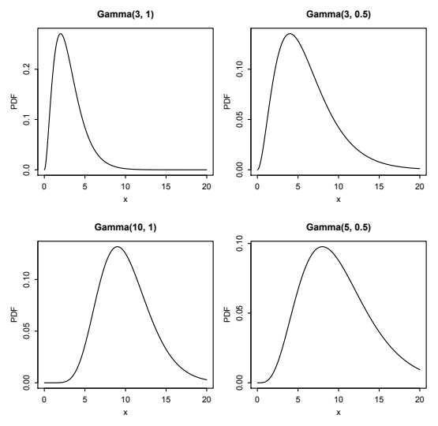
이제 \(X\sim\operatorname{Gamma}(a,1)\)에서 시작해 감마분포의 평균, 분산과 다른 적률을 구하자. 감마함수의 성질과 패턴 인식으로 적분을 계산하는 기법을 사용할 것이다. 평균을 구하기 위해 \(E(X)\)의 정의를 쓰면
\[E(X)=\int_0^\infty\frac1{\Gamma(a)}x^{a+1}e^{-x}\frac{dx}{x}\]
이다. 하지만 끔찍한 부분적분을 시도하는 대신 \(1/\Gamma(a)\)를 떼어 내고 남은 것이 정확히 \(a+1\)에서 계산한 감마함수임을 알아볼 수 있다. 따라서
\[E(X)=\frac{\Gamma(a+1)}{\Gamma(a)}=\frac{a\Gamma(a)}{\Gamma(a)}=a.\]
마찬가지로 분산을 구할 때 LOTUS를 사용하면 2차 적률의 적분 표현을 얻는다.
\[E(X^2)=\int_0^\infty\frac1{\Gamma(a)}x^{a+2}e^{-x}\frac{dx}{x}.\]
이제 \(a+2\)에서 계산한 감마함수의 형태를 알아볼 수 있다. 따라서
\[E(X^2)=\frac{\Gamma(a+2)}{\Gamma(a)} =\frac{(a+1)a\Gamma(a)}{\Gamma(a)}=(a+1)a,\]
\[\operatorname{Var}(X)=(a+1)a-a^2=a.\]
그러므로 \(X\sim\operatorname{Gamma}(a,1)\)이면 \(E(X)=\operatorname{Var}(X)=a\)이다.
\(c\)차 적률은 2차 적률보다 어렵지 않다. LOTUS를 쓰고 \(\Gamma(a+c)\)의 정의를 알아보면 된다. 적분이 수렴하는 모든 실수 \(c\), 즉 \(c>-a\)에 대해
\[E(X^c)=\int_0^\infty\frac1{\Gamma(a)}x^{a+c}e^{-x}\frac{dx}{x} =\frac{\Gamma(a+c)}{\Gamma(a)}.\]
이제 \(Y=X/\lambda\sim\operatorname{Gamma}(a,\lambda)\)로 변환하면
\[E(Y)=\frac1\lambda E(X)=\frac a\lambda,\qquad \operatorname{Var}(Y)=\frac1{\lambda^2}\operatorname{Var}(X)=\frac a{\lambda^2},\]
\[E(Y^c)=\frac1{\lambda^c}E(X^c) =\frac1{\lambda^c}\frac{\Gamma(a+c)}{\Gamma(a)},\qquad c>-a.\]
감마 확률밀도함수 그래프를 다시 보면, 평균과 분산이 \(a\)에 대해서는 증가하고 \(\lambda\)에 대해서는 감소한다는 결과와 일치한다.
지금까지는 확률밀도함수를 이용해 감마분포를 공부하면서 그래프에서 일반적인 패턴을 알아보고 평균과 분산을 유도했다. 하지만 확률밀도함수는 감마분포를 왜 사용하는지에 대한 통찰을 별로 주지 않으며, 모수 \(a\)와 \(\lambda\)에 대한 해석도 충분히 제공하지 않는다. 이를 위해서는 이야기를 통해 감마분포와 다른 이름 붙은 분포를 연결해야 한다. 이 절의 나머지 부분은 감마분포의 이야기를 다룬다.
특수하게 \(a\)가 정수이면 \(\operatorname{Gamma}(a,\lambda)\) 확률변수를 독립이고 동일한 분포를 따르는 \(\operatorname{Expo}(\lambda)\) 확률변수들의 합, 즉 합성곱으로 나타낼 수 있다.
정리 8.4.3. \(X_1,\ldots,X_n\)이 i.i.d. \(\operatorname{Expo}(\lambda)\)이면
\[X_1+\cdots+X_n\sim\operatorname{Gamma}(n,\lambda).\]
증명. \(\operatorname{Expo}(\lambda)\)의 적률생성함수는 \(t<\lambda\)에서 \(\lambda/(\lambda-t)\)이므로 \(X_1+\cdots+X_n\)의 적률생성함수는
\[M_n(t)=\left(\frac\lambda{\lambda-t}\right)^n,\qquad t<\lambda.\]
\(Y\sim\operatorname{Gamma}(n,\lambda)\)라 하자. \(Y\)의 적률생성함수가 \(X_1+\cdots+X_n\)의 적률생성함수와 같음을 보이겠다. LOTUS에 따라
\[E(e^{tY})=\int_0^\infty e^{ty}\frac1{\Gamma(n)}(\lambda y)^n e^{-\lambda y}\frac{dy}{y}.\]
여기서도 패턴 인식을 이용해 적분할 것이다. 적분 안에 남은 것이 알아볼 수 있는 감마 확률밀도함수가 될 때까지 대수적으로 조작하기만 하면 된다.
\[\begin{aligned} E(e^{tY})&=\int_0^\infty e^{ty}\frac1{\Gamma(n)}(\lambda y)^n e^{-\lambda y}\frac{dy}{y}\\ &=\frac{\lambda^n}{(\lambda-t)^n}\int_0^\infty\frac1{\Gamma(n)}e^{-(\lambda-t)y}((\lambda-t)y)^n\frac{dy}{y}. \end{aligned}\]
적분 밖으로 \(\lambda^n\)을 꺼낸 다음 안에서는 \((\lambda-t)^n\)을 곱하고 밖에서는 같은 값으로 나누었다. \(t<\lambda\)라고 가정하면 적분 안의 식은 이제 \(\operatorname{Gamma}(n,\lambda-t)\)의 확률밀도함수이다. 확률밀도함수의 적분값은 1이므로
\[E(e^{tY})=\left(\frac\lambda{\lambda-t}\right)^n,\qquad t<\lambda.\]
\(t\ge\lambda\)이면 적분은 수렴하지 않는다. \(X_1+\cdots+X_n\)과 \(Y\sim\operatorname{Gamma}(n,\lambda)\)의 적률생성함수가 같음을 보였다. 적률생성함수가 분포를 결정하므로 \(X_1+\cdots+X_n\sim\operatorname{Gamma}(n,\lambda)\)이다.
다른 방법으로 합성곱 적분을 귀납적으로 계산할 수도 있다. \(\lambda=1\)인 경우만 생각하면 충분하다. 그 경우를 증명한 다음 확률변수의 척도를 바꾸어 일반적인 \(\lambda\)에 대한 결과를 증명할 수 있기 때문이다. \(T_n=X_1+\cdots+X_n\)으로 놓자. 모든 \(n\ge1\)에 대해 \(T_n\sim\operatorname{Gamma}(n,1)\)임을 귀납법으로 보이겠다. \(n=1\)이면 \(\operatorname{Gamma}(1,1)\)의 확률밀도함수가 \(x>0\)에서 \(e^{-x}\)이고 이는 \(\operatorname{Expo}(1)\)의 확률밀도함수와 같으므로 성립한다. 이제 \(T_n\sim\operatorname{Gamma}(n,1)\)이라고 가정하고 \(T_{n+1}\sim\operatorname{Gamma}(n+1,1)\)임을 보이자. \(T_{n+1}=T_n+X_{n+1}\)의 확률밀도함수는 합성곱 적분으로 주어진다.
\[\begin{aligned} \int_0^\infty f_{T_n}(x)f_{X_{n+1}}(t-x)\,dx &=\frac1{\Gamma(n)}\int_0^t x^{n-1}e^{-x}e^{-(t-x)}\,dx\\ &=\frac{e^{-t}}{\Gamma(n)}\int_0^t x^{n-1}\,dx =\frac{t^ne^{-t}}{\Gamma(n+1)},\qquad t>0. \end{aligned}\]
이로써 귀납법이 완성된다. \(\blacksquare\)
따라서 \(Y\sim\operatorname{Gamma}(a,\lambda)\)이고 \(a\)가 정수이면 \(Y\)를 i.i.d. \(\operatorname{Expo}(\lambda)\) 확률변수들의 합 \(X_1+\cdots+X_a\)로 나타내어 평균과 분산을 바로 얻을 수 있다.
\[E(Y)=E(X_1+\cdots+X_a)=aE(X_1)=\frac a\lambda,\]
\[\operatorname{Var}(Y)=\operatorname{Var}(X_1+\cdots+X_a) =a\operatorname{Var}(X_1)=\frac a{\lambda^2}.\]
이는 앞에서 일반적인 \(a\)에 대해 유도한 결과와 일치한다.
정리 8.4.3을 이용하면 감마분포를 포아송 과정의 이야기와도 연결할 수 있다. 5장에서 비율이 \(\lambda\)인 포아송 과정의 도착 간격이 i.i.d. \(\operatorname{Expo}(\lambda)\) 확률변수임을 보였다. 그런데 \(n\)번째 도착까지의 총대기 시간 \(T_n\)은 처음 \(n\)개의 도착 간격을 더한 것이다. 예를 들어 그림 8.8은 \(T_3\)이 세 도착 간격 \(X_1,X_2,X_3\)의 합임을 보여 준다. 따라서 정리에 의해 \(T_n\sim\operatorname{Gamma}(n,\lambda)\)이다. 포아송 과정의 도착 간격은 지수 확률변수인 반면, 각 도착 시각 자체는 감마 확률변수이다.
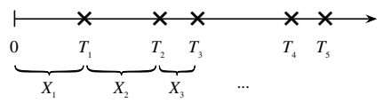
주의 8.4.4. \(X_j\)들과 달리 \(T_j\)들은 반드시 증가해야 하므로 서로 독립이 아니며, 동일한 분포를 따르지도 않는다.
드디어 \(\operatorname{Gamma}(a,\lambda)\) 분포의 모수를 해석할 수 있게 되었다. 포아송 과정 이야기에서 \(a\)는 기다리는 성공의 횟수이고 \(\lambda\)는 성공이 도착하는 비율이다. \(Y\sim\operatorname{Gamma}(a,\lambda)\)는 비율 \(\lambda\)인 포아송 과정에서 \(a\)번째 도착까지의 총대기 시간이다.9
이 이야기의 결과로 \(\lambda\)가 같은 감마 확률변수들의 합성곱은 여전히 감마분포이다. 연습문제 29에서는 여러 관점에서 이 사실을 살펴본다.
지수분포를 소개했을 때 우리는 이를 기하분포의 연속형 대응물로 보았다. 기하분포는 이산시간에서 첫 성공을 기다리고, 지수분포는 연속시간에서 첫 성공을 기다린다. 마찬가지로 이제 감마분포를 음이항분포의 연속형 대응물이라고 할 수 있다. 음이항분포는 기하 대기시간들의 합이고 감마분포는 지수 대기시간들의 합이다. 연습문제 54에서는 적률생성함수를 이용하여 감마분포를 음이항분포의 연속형 극한으로 얻을 수 있음을 보일 것이다.
감마분포에 관한 마지막 이야기는 베타 분포가 이항분포와 맺는 특별한 관계를 감마분포가 포아송 분포와도 공유한다는 것이다. 감마분포는 포아송 분포의 켤레 사전분포이다. 앞에서 베타 분포는 지지집합이 \((0,1)\)이므로 알려지지 않은 성공 확률을 나타낼 수 있음을 보았다. 반면 감마분포는 지지집합이 \((0,\infty)\)이므로 포아송 과정의 알려지지 않은 비율을 나타낼 수 있다.
이를 살펴보기 위해 버스가 비율 \(\lambda\)인 포아송 과정에 따라 도착하는 블로치빌로 돌아가자. 이전에는 \(\lambda=1/10\)이라고 가정하여 버스 간 시간이 평균 10분인 i.i.d. 지수 확률변수들이었다. 이제 프레드는 버스의 도착 비율 \(\lambda\)를 알지 못하므로 이를 알아내야 한다고 하자. 프레드는 베이즈주의적 접근을 따르고 알려지지 않은 비율을 확률변수로 취급한다.
이야기 8.4.5 (감마-포아송 켤레성). 블로치빌의 어느 버스 정류장에 버스가 시간당 \(\lambda\)대의 비율인 포아송 과정에 따라 도착하지만 \(\lambda\)는 알려져 있지 않다. 블로치빌에서의 잊기 힘든 모험을 바탕으로 프레드는 사전분포 \(\lambda\sim\operatorname{Gamma}(r_0,b_0)\)을 사용하여 \(\lambda\)에 대한 불확실성을 정량화한다. 여기서 \(r_0,b_0\)는 알려진 양의 상수이고 \(r_0\)는 정수이다.
버스 시스템을 더 잘 이해하기 위해 프레드는 \(\lambda\)에 관해 더 알아보고 싶다. 프레드는 참을성이 아주 많아서 버스 정류장에 \(t\)시간 동안 앉아 그 시간 동안 도착하는 버스가 몇 대인지 세기로 한다. 이 시간 동안의 버스 수를 \(Y\)라 하고, 프레드가 \(Y=y\)를 관측했다고 하자.
\(Y\)와 \(\lambda\)의 혼합형 결합분포를 구하라.
\(Y\)의 주변분포를 구하라.
\(\lambda\)의 사후분포, 즉 자료 \(y\)가 주어졌을 때 \(\lambda\)의 조건부분포를 구하라.
사후평균 \(E(\lambda\mid Y=y)\)와 사후분산 \(\operatorname{Var}(\lambda\mid Y=y)\)를 구하라.
풀이. 이 문제의 구조가 예제 7.1.26의 혼합형 결합분포의 구조와 비슷하다는 점에 주목하자. 우리는 주변적으로 \(\lambda\sim\operatorname{Gamma}(r_0,b_0)\)임을 알고 있으며, 포아송 과정의 정의에 따라 실제 비율 \(\lambda\)를 안다는 조건 아래 길이 \(t\)인 구간의 버스 수는 \(\operatorname{Pois}(\lambda t)\) 분포를 따른다. 즉 주어진 것은
\[\lambda\sim\operatorname{Gamma}(r_0,b_0),\qquad Y\mid\lambda\sim\operatorname{Pois}(\lambda t)\]
이다. 이제 방향을 뒤집어 \(Y\)의 주변분포와 \(\lambda\)의 조건부분포인 사후분포를 구하라는 요청이다. 이는 베이즈 추론의 특징적인 모습이다. 우리는 알려지지 않은 모수의 사전분포(여기서는 \(\lambda\)의 감마분포)와 그 모수가 주어졌을 때의 데이터 모형(여기서는 \(\lambda\)가 주어진 \(Y\)의 포아송 분포)을 가지고 베이즈 정리를 이용해 관측 데이터가 주어졌을 때 미지의 양의 분포를 구한다. 이제 시작해 보자.
- \(f_0\)을 \(\lambda\)의 사전 확률밀도함수라 하자. \(Y\)와 \(\lambda\)의 혼합형 결합분포는
\[f(y,\lambda)=P(Y=y\mid\lambda)f_0(\lambda) =\frac{e^{-\lambda t}(\lambda t)^y}{y!} \frac{(b_0\lambda)^{r_0}e^{-b_0\lambda}}{\lambda\Gamma(r_0)},\]
여기서 \(y=0,1,2,\ldots\), \(\lambda>0\)이다. 그림 8.9에 이 혼합형 결합분포를 그렸다. \(\lambda\)의 모든 값에 대해 \(Y\)의 조건부 확률질량함수가 있으며 \(Y\)의 모든 값에 대해 \(\lambda\)의 조건부 확률밀도함수가 있다.10
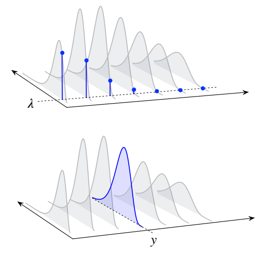
- 혼합형 결합분포에서 \(\lambda\)를 적분해 없애면 \(Y\)의 주변 확률질량함수를 얻는다. 이는 전체 확률의 법칙의 한 형태이기도 하다. 따라서
\[\begin{aligned} P(Y=y)&=\int_0^\infty P(Y=y\mid\lambda)f_0(\lambda)\,d\lambda\\ &=\int_0^\infty\frac{e^{-\lambda t}(\lambda t)^y}{y!} \frac{(b_0\lambda)^{r_0}e^{-b_0\lambda}}{\Gamma(r_0)}\frac{d\lambda}{\lambda}. \end{aligned}\]
이 적분을 패턴 인식으로 계산해 보자. \(\lambda\)가 들어간 항에 초점을 맞추면 \(\lambda^{r_0+y}\)와 \(e^{-(b_0+t)\lambda}\)가 숨어 있는 것이 보인다. 이는 \(\operatorname{Gamma}(r_0+y,b_0+t)\) 확률밀도함수의 패턴에 맞출 수 있음을 시사한다. \(\lambda\)에 의존하지 않는 항을 모두 꺼낸 뒤 원하는 밀도함수를 적분 안에 만들기 위해 필요한 만큼 곱하고, 적분 밖에는 그 역수를 곱하는 것을 기억하자.
\[\begin{aligned} P(Y=y)&=\frac{t^yb_0^{r_0}}{y!\Gamma(r_0)} \int_0^\infty e^{-(b_0+t)\lambda}\lambda^{r_0+y}\frac{d\lambda}{\lambda}\\ &=\frac{\Gamma(r_0+y)}{y!\Gamma(r_0)} \frac{t^yb_0^{r_0}}{(b_0+t)^{r_0+y}} \int_0^\infty\frac1{\Gamma(r_0+y)}e^{-(b_0+t)\lambda} ((b_0+t)\lambda)^{r_0+y}\frac{d\lambda}{\lambda}\\ &=\frac{(r_0+y-1)!}{(r_0-1)!y!} \left(\frac t{b_0+t}\right)^y \left(\frac{b_0}{b_0+t}\right)^{r_0}. \end{aligned}\]
마지막 단계에서 \(r_0\)가 정수이므로 적용할 수 있는 성질 \(\Gamma(n)=(n-1)!\)을 사용했다. 이는 \(\operatorname{NBin}(r_0,b_0/(b_0+t))\)의 확률질량함수이므로 \(Y\)의 주변분포는 모수가 \(r_0\)와 \(b_0/(b_0+t)\)인 음이항분포이다.
- 베이즈 정리에 따라 \(\lambda\)의 사후 확률밀도함수는
\[f_1(\lambda\mid y)=\frac{P(Y=y\mid\lambda)f_0(\lambda)}{P(Y=y)}\]
이다. 앞 소문항에서 \(P(Y=y)\)를 구했지만 이는 \(\lambda\)에 의존하지 않으므로 정규화 상수의 일부로 취급할 수 있다. 이 항과 \(\lambda\)에 의존하지 않는 다른 곱셈 인수들을 정규화 상수에 흡수하면
\[f_1(\lambda\mid y)\propto e^{-\lambda t}\lambda^y\lambda^{r_0}e^{-b_0\lambda}\frac1\lambda =e^{-(b_0+t)\lambda}\lambda^{r_0+y}\frac1\lambda.\]
이는 \(\lambda\)의 사후분포가 \(\operatorname{Gamma}(r_0+y,b_0+t)\)임을 보여 준다. 사전분포에서 사후분포로 갈 때 \(\lambda\)의 분포는 감마분포 계열에 머무르므로 감마분포는 실제로 포아송 분포의 켤레 사전분포이다.
이제 \(\lambda\)의 사후 확률밀도함수를 알았으므로 (b)를 더 우아한 방법으로 풀 수 있다. 베이즈 정리를 다시 배열하면 \(Y\)의 주변 확률질량함수는
\[P(Y=y)=\frac{P(Y=y\mid\lambda)f_0(\lambda)}{f_1(\lambda\mid y)}\]
이다. 분자는 문제에서 주어졌고 분모는 방금 계산했으므로 이들을 대입하고 정리하면 다시
\[Y\sim\operatorname{NBin}\left(r_0,\frac{b_0}{b_0+t}\right)\]
를 얻는다.
- 조건부 확률밀도함수는 확률밀도함수이므로 사후분포에 대해 \(\lambda\)의 기댓값과 분산을 계산하는 데 아무 문제가 없다. \(\operatorname{Gamma}(r_0+y,b_0+t)\) 분포의 평균과 분산에 따라
\[E(\lambda\mid Y=y)=\frac{r_0+y}{b_0+t},\qquad \operatorname{Var}(\lambda\mid Y=y)=\frac{r_0+y}{(b_0+t)^2}.\]
이 예제는 감마분포를 켤레 사전분포로 사용할 때 모수에 대한 또 다른 해석을 제공한다. 프레드의 \(\operatorname{Gamma}(r_0,b_0)\) 사전분포는 \(t\)시간 동안 \(y\)번의 도착을 관측한 후 \(\operatorname{Gamma}(r_0+y,b_0+t)\) 사후분포로 갱신되었다. 과거에 프레드가 \(b_0\)시간 동안 버스 \(r_0\)대가 도착하는 것을 관측했다고 상상할 수 있다. 그러면 새로운 자료를 얻은 후 \(b_0+t\)시간 동안 버스 \(r_0+y\)대가 도착한 것을 관측한 셈이다. 따라서 \(r_0\)는 사전에 관측한 도착 횟수로, \(b_0\)는 그 도착들에 걸린 전체 시간으로 해석할 수 있다. \(\square\)
8.5 베타 분포와 감마분포의 관계
이 절에서는 베타 분포와 감마분포를 공통된 이야기로 연결한다. 추가 보너스로 이 이야기는 \(\operatorname{Beta}(a,b)\) 확률밀도함수의 정규화 상수를 감마함수로 표현하는 식을 제공하며, \(\operatorname{Beta}(a,b)\) 분포의 기댓값도 쉽게 구할 수 있게 해 준다.
이야기 8.5.1 (은행과 우체국). 볼일을 보면서 은행에 들른 다음 우체국에 가야 한다. 은행에서 줄을 서서 기다리는 시간을 \(X\sim\operatorname{Gamma}(a,\lambda)\), 우체국에서 줄을 서서 기다리는 시간을 \(Y\sim\operatorname{Gamma}(b,\lambda)\)라 하자. 두 분포의 \(\lambda\)는 같다. \(X\)와 \(Y\)가 독립이라고 가정한다. \(T=X+Y\)와 \(W=X/(X+Y)\)의 결합분포는 무엇인가? \(T\)는 은행과 우체국에서 기다린 총시간이고 \(W\)는 전체 대기 시간 중 은행에서 보낸 시간의 비율이다.
풀이. \(T\)와 \(W\)의 결합확률밀도함수를 구하기 위해 2차원 변수변환을 수행한다. \(t=x+y\), \(w=x/(x+y)\)로 놓으면 \(x=tw\), \(y=t(1-w)\)이고
\[\frac{\partial(x,y)}{\partial(t,w)}=\begin{pmatrix}w&t\\1-w&-t\end{pmatrix}\]
이며 그 행렬식의 절댓값은 \(t\)이다. 따라서
\[ \begin{aligned} f_{T,W}(t,w) &=f_{X,Y}(x,y)\left|\frac{\partial(x,y)}{\partial(t,w)}\right| =f_X(x)f_Y(y)\,t\\ &=\frac{1}{\Gamma(a)}(\lambda x)^ae^{-\lambda x}\frac1x\cdot \frac{1}{\Gamma(b)}(\lambda y)^be^{-\lambda y}\frac1y\cdot t\\ &=\frac{1}{\Gamma(a)}(\lambda tw)^ae^{-\lambda tw}\frac1{tw}\cdot \frac{1}{\Gamma(b)}(\lambda t(1-w))^be^{-\lambda t(1-w)}\frac1{t(1-w)}\cdot t. \end{aligned} \]
이제 \(w\)가 들어 있는 항과 \(t\)가 들어 있는 항을 각각 묶자.
\[ \begin{aligned} f_{T,W}(t,w) &=\frac{1}{\Gamma(a)\Gamma(b)}w^{a-1}(1-w)^{b-1}(\lambda t)^{a+b}e^{-\lambda t}\frac1t\\ &=\left(\frac{\Gamma(a+b)}{\Gamma(a)\Gamma(b)}w^{a-1}(1-w)^{b-1}\right) \left(\frac{1}{\Gamma(a+b)}(\lambda t)^{a+b}e^{-\lambda t}\frac1t\right), \end{aligned} \]
여기서 \(0<w<1\), \(t>0\)이다. 결합확률밀도함수의 형태와 명제 7.1.21을 통해 다음 몇 가지를 알 수 있다.
결합확률밀도함수가 \(t\)의 함수와 \(w\)의 함수의 곱으로 분해되므로 \(T\)와 \(W\)는 독립이다. 즉 총대기 시간은 은행에서 보낸 시간의 비율과 독립이다.
\(T\)의 주변 확률밀도함수를 알아볼 수 있으므로 \(T\sim\operatorname{Gamma}(a+b,\lambda)\)라고 결론짓는다.
명제 7.1.21을 이용하거나 \(T,W\)의 결합확률밀도함수에서 \(T\)를 적분하여 없애면 \(W\)의 확률밀도함수는
\[f_W(w)=\frac{\Gamma(a+b)}{\Gamma(a)\Gamma(b)}w^{a-1}(1-w)^{b-1},\qquad 0<w<1.\]
이 확률밀도함수는 \(\operatorname{Beta}(a,b)\) 확률밀도함수에 비례하므로 바로 \(\operatorname{Beta}(a,b)\) 확률밀도함수이다!
방금 수행한 계산의 부산물로 베타 분포의 정규화 상수도 구했다는 점에 주목하자.
\[\frac1{\beta(a,b)}=\frac{\Gamma(a+b)}{\Gamma(a)\Gamma(b)}\]
는 \(\operatorname{Beta}(a,b)\) 확률밀도함수 앞에 들어가는 상수이다. \(\square\)
요약하면 은행과 우체국 이야기는 비율 모수 \(\lambda\)가 같은 독립 감마 확률변수 \(X,Y\)를 더할 때, 총합 \(X+Y\)는 감마분포를 따르고 비율 \(X/(X+Y)\)는 베타 분포를 따르며 총합과 비율은 독립이라는 사실을 알려 준다.
이 결과를 사용하면 미적분을 조금도 쓰지 않고 \(W\sim\operatorname{Beta}(a,b)\)의 평균을 구할 수 있다.
예제 8.5.2 (베타 분포의 기댓값). 위와 같은 표기에서 \(T\)와 \(W\)는 독립이므로 비상관이라는 점에 주목하자. 즉 \(E(TW)=E(T)E(W)\)이다. 이를 \(X,Y\)로 쓰면
\[ E\left((X+Y)\frac{X}{X+Y}\right)=E(X+Y)E\left(\frac{X}{X+Y}\right), \]
\[E(X)=E(X+Y)E\left(\frac{X}{X+Y}\right),\]
\[\frac{E(X)}{E(X+Y)}=E\left(\frac{X}{X+Y}\right).\]
보통 마지막 등식은 끔찍한 실수이다. \(E(X/(X+Y))\)와 같은 기댓값을 마주했을 때 일반적으로 기댓값 기호를 마음대로 분자와 분모 안으로 옮길 수는 없다. 그러나 이 경우에는 은행과 우체국 이야기가 그 조작을 정당화하므로, 다행히 \(W\)의 기댓값을 구하는 일은 \(X\)와 \(X+Y\)의 기댓값을 구하는 일로 줄어든다.
\[E(W)=E\left(\frac{X}{X+Y}\right)=\frac{E(X)}{E(X+Y)}=\frac{a/\lambda}{a/\lambda+b/\lambda}=\frac{a}{a+b}.\]
또 다른 방법은 기댓값의 정의에서 출발하는 것이다.
\[E(W)=\int_0^1\frac{\Gamma(a+b)}{\Gamma(a)\Gamma(b)}w^a(1-w)^{b-1}\,dw.\]
패턴 인식에 의해 피적분함수는 정규화 상수를 제외하면 \(\operatorname{Beta}(a+1,b)\) 확률밀도함수이다. 이 확률밀도함수와 정확히 일치하도록 만든 후 감마함수의 성질을 적용하면
\[ \begin{aligned} E(W) &=\frac{\Gamma(a+b)}{\Gamma(a)}\frac{\Gamma(a+1)}{\Gamma(a+b+1)} \int_0^1\frac{\Gamma(a+b+1)}{\Gamma(a+1)\Gamma(b)}w^a(1-w)^{b-1}\,dw\\ &=\frac{\Gamma(a+b)}{\Gamma(a)}\frac{a\Gamma(a)}{(a+b)\Gamma(a+b)} =\frac{a}{a+b}. \end{aligned} \]
연습문제 30에서는 이 방법으로 베타 분포의 분산과 나머지 적률들을 구할 것이다. \(\square\)
이제 베타 분포의 정규화 상수를 알았으므로 베타-이항분포의 확률질량함수도 빠르게 구할 수 있다.
예제 8.5.3 (베타-이항 확률질량함수). \(X\mid p\sim\operatorname{Bin}(n,p)\)이고 \(p\sim\operatorname{Beta}(a,b)\)라 하자. 이야기 8.3.3에서 언급했듯이 \(X\)는 베타-이항분포를 따른다. \(X\)의 주변분포를 구하라.
풀이. \(f(p)\)를 \(\operatorname{Beta}(a,b)\) 확률밀도함수라 하자. 그러면
\[ \begin{aligned} P(X=k) &=\int_0^1P(X=k\mid p)f(p)\,dp\\ &=\frac1{\beta(a,b)}\int_0^1\binom nk p^k(1-p)^{n-k}p^{a-1}(1-p)^{b-1}\,dp\\ &=\frac{\binom nk}{\beta(a,b)}\int_0^1p^{a+k-1}(1-p)^{b+n-k-1}\,dp\\ &=\binom nk\frac{\beta(a+k,b+n-k)}{\beta(a,b)}, \end{aligned} \]
여기서 \(k=0,1,\ldots,n\)이다. \(\square\)
8.6 순서통계량
이 장에서 마지막으로 살펴볼 변환은 확률변수 \(n\)개 \(X_1,\ldots,X_n\)을 크기순으로 정렬하여 변환된 확률변수 \(\min(X_1,\ldots,X_n),\ldots,\max(X_1,\ldots,X_n)\)을 얻는 변환이다. 변환된 확률변수들은 순서통계량이라 하며,11 앞에서 언급했듯이 극값의 분포에 관심이 있을 때 유용한 경우가 많다.
또한 표본평균 \(\bar X_n\)과 마찬가지로 순서통계량은 실험을 유용하게 요약한다. 순서통계량으로 관측값 중 하위 5%, 하위 25%, 상위 25% 등을 구분하는 경계값을 정할 수 있기 때문이다. 이러한 경계값을 표본의 분위수라 한다.
정의 8.6.1 (순서통계량). 확률변수 \(X_1,X_2,\ldots,X_n\)의 순서통계량은 다음과 같은 확률변수 \(X_{(1)},X_{(2)},\ldots,X_{(n)}\)이다.
- \(X_{(1)}=\min(X_1,\ldots,X_n)\),
- \(X_{(2)}\)는 \(X_1,\ldots,X_n\) 중 두 번째로 작은 값,
- \(\cdots\)
- \(X_{(n-1)}\)은 \(X_1,\ldots,X_n\) 중 두 번째로 큰 값,
- \(X_{(n)}=\max(X_1,\ldots,X_n)\).
정의에 의해 \(X_{(1)}\leq X_{(2)}\leq\cdots\leq X_{(n)}\)이다. \(X_{(j)}\)를 \(j\)번째 순서통계량이라고 한다. \(n\)이 홀수이면 \(X_{((n+1)/2)}\)를 \(X_1,\ldots,X_n\)의 표본 중앙값이라 한다.
참고 8.6.2. 순서통계량 \(X_{(1)},\ldots,X_{(n)}\)은 확률변수이고, 각각의 \(X_{(j)}\)는 \(X_1,\ldots,X_n\)의 함수이다. 원래 확률변수들이 독립이더라도 순서통계량들은 종속일 수 있다. \(X_{(1)}=100\)임을 알면 \(X_{(n)}\)은 반드시 100 이상이어야 한다.
이제 \(X_1,\ldots,X_n\)이 독립이고 동일한 분포를 따르는 연속확률변수인 경우에 집중한다. 이산확률변수에는 같은 값이 나올 확률이 양수인 반면, 연속확률변수에는 같은 값이 나올 확률이 정확히 0이어서 문제가 훨씬 쉬워지기 때문이다. 따라서 이 절의 나머지 부분에서는 \(X_1,\ldots,X_n\)이 독립이고 동일한 연속분포를 따르며 누적분포함수가 \(F\), 확률밀도함수가 \(f\)라고 가정한다. 각 순서통계량 \(X_{(j)}\)의 주변 누적분포함수와 확률밀도함수, 그리고 \((X_{(1)},\ldots,X_{(n)})\)의 결합확률밀도함수를 유도할 것이다.12
곧바로 부딪히는 어려움은 순서통계량으로의 변환에 역변환이 없다는 것이다. 예를 들어 \(\min(X,Y)=3\), \(\max(X,Y)=5\)만 알면 원래 \(X\)와 \(Y\)의 값이 각각 3과 5였는지, 아니면 5와 3이었는지 알 수 없다. 따라서 \(\mathbb R^n\)에서 \(\mathbb R^n\)으로의 변수변환 공식을 적용할 수 없다. 대신 필요한 경우 그림을 참고하면서 직접 구해 보자.
먼저 \(X_{(n)}=\max(X_1,\ldots,X_n)\)의 누적분포함수부터 시작하자. \(X_{(n)}\)이 \(x\) 이하일 필요충분조건은 모든 \(X_j\)가 \(x\) 이하인 것이므로,
\[\begin{aligned} F_{X_{(n)}}(x)&=P(\max(X_1,\ldots,X_n)\leq x)\\ &=P(X_1\leq x,\ldots,X_n\leq x)\\ &=P(X_1\leq x)\cdots P(X_n\leq x)\\ &=(F(x))^n, \end{aligned}\]
여기서 \(F\)는 각 \(X_i\)의 누적분포함수이다. 마찬가지로 \(X_{(1)}=\min(X_1,\ldots,X_n)\)이 \(x\)보다 클 필요충분조건은 모든 \(X_j\)가 \(x\)보다 큰 것이므로,
\[\begin{aligned} F_{X_{(1)}}(x)&=1-P(\min(X_1,\ldots,X_n)>x)\\ &=1-P(X_1>x,\ldots,X_n>x)\\ &=1-(1-F(x))^n. \end{aligned}\]
같은 논리로 \(X_{(j)}\)의 누적분포함수도 구할 수 있다. 사건 \(X_{(j)}\leq x\)가 일어나려면 적어도 \(j\)개의 \(X_i\)가 \(x\)의 왼쪽에 있어야 한다. 이를 그림 8.10에 나타냈다.
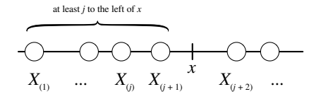
\(x\)의 왼쪽에 있는 \(X_i\)의 개수가 중요할 것 같으므로 이를 나타내는 새로운 확률변수 \(N\)을 정의하자. 즉 \(N\)은 \(x\)의 왼쪽에 놓이는 \(X_i\)의 개수이다. 각 \(X_i\)는 다른 변수와 독립적으로 확률 \(F(x)\)로 \(x\)의 왼쪽에 놓인다. \(x\)의 왼쪽에 놓이는 것을 성공으로 정의하면 성공 확률이 \(F(x)\)인 독립 베르누이 시행 \(n\)개가 있으므로 \(N\sim\operatorname{Bin}(n,F(x))\)이다. 따라서 이항분포의 확률질량함수에 의해
\[\begin{aligned} P(X_{(j)}\leq x)&=P(\text{적어도 }j\text{개의 }X_i\text{가 }x\text{의 왼쪽에 있다})\\ &=P(N\geq j)\\ &=\sum_{k=j}^{n}\binom nk F(x)^k(1-F(x))^{n-k}. \end{aligned}\]
따라서 \(X_{(j)}\)의 누적분포함수에 대한 다음 결과를 얻는다.
정리 8.6.3 (순서통계량의 누적분포함수). \(X_1,\ldots,X_n\)이 누적분포함수 \(F\)를 갖는, 독립이고 동일한 분포를 따르는 연속확률변수라고 하자. 그러면 \(j\)번째 순서통계량 \(X_{(j)}\)의 누적분포함수는
\[P(X_{(j)}\leq x)=\sum_{k=j}^{n}\binom nk F(x)^k(1-F(x))^{n-k}.\]
\(X_{(j)}\)의 확률밀도함수를 얻기 위해 누적분포함수를 \(x\)에 대해 미분할 수 있지만, 그 결과는 복잡하다. 물론 간단하게 정리할 수는 있다. 대신 좀 더 직접적인 방법을 택하자. \(j\)번째 순서통계량이 \(x\) 주변의 길이 \(dx\)인 무한소 구간에 놓일 확률 \(f_{X_{(j)}}(x)\,dx\)를 생각해 보자. 이런 일이 일어나는 유일한 방법을 그림 8.11에 나타냈다. \(X_i\) 중 하나는 \(x\) 주변의 무한소 구간에 놓이고, 정확히 \(j-1\)개는 \(x\)의 왼쪽에, 나머지 \(n-j\)개는 \(x\)의 오른쪽에 놓여야 한다.
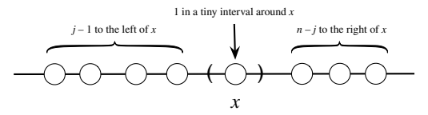
이처럼 구체적인 사건이 일어날 확률은 얼마일까? 실험을 단계별로 나누어 보자.
- 먼저 \(X_i\) 중 어느 것이 \(x\) 주변의 무한소 구간에 놓일지 선택한다. 가능한 선택은 \(n\)가지이며, 각각의 확률은 \(f(x)\,dx\)이다. 여기서 \(f\)는 각 \(X_i\)의 확률밀도함수이다.
- 다음으로 나머지 \(n-1\)개 중에서 \(x\)의 왼쪽에 놓일 정확히 \(j-1\)개를 선택한다. 가능한 선택은 \(\binom{n-1}{j-1}\)가지이며, 각 선택의 확률은 이항분포 확률질량함수에 따라 \(F(x)^{j-1}(1-F(x))^{n-j}\)이다.
두 단계의 확률을 곱하면
\[f_{X_{(j)}}(x)\,dx=nf(x)\,dx\binom{n-1}{j-1}F(x)^{j-1}(1-F(x))^{n-j}.\]
양변에서 \(dx\)를 없애면 원하는 확률밀도함수를 얻는다.
정리 8.6.4 (순서통계량의 확률밀도함수). \(X_1,\ldots,X_n\)이 누적분포함수 \(F\)와 확률밀도함수 \(f\)를 갖는, 독립이고 동일한 분포를 따르는 연속확률변수라고 하자. 그러면 \(j\)번째 순서통계량 \(X_{(j)}\)의 주변 확률밀도함수는
\[f_{X_{(j)}}(x)=n\binom{n-1}{j-1}f(x)F(x)^{j-1}(1-F(x))^{n-j}.\]
일반적으로 \(X_1,\ldots,X_n\)의 순서통계량은 이름이 알려진 분포를 따르지 않지만, 표준 균등분포의 순서통계량은 예외이다.
예제 8.6.5 (균등분포의 순서통계량). \(U_1,\ldots,U_n\)이 독립이고 동일한 \(\operatorname{Unif}(0,1)\) 분포를 따른다고 하자. 그러면 \(0\leq x\leq1\)에서 \(f(x)=1\), \(F(x)=x\)이므로 \(U_{(j)}\)의 확률밀도함수는
\[f_{U_{(j)}}(x)=n\binom{n-1}{j-1}x^{j-1}(1-x)^{n-j}.\]
이는 바로 \(\operatorname{Beta}(j,n-j+1)\)의 확률밀도함수이다! 따라서 \(U_{(j)}\sim\operatorname{Beta}(j,n-j+1)\)이고 \(E(U_{(j)})=j/(n+1)\)이다.
간단한 경우 \(n=2\)는 예제 7.2.2와 일치한다. 그 예제에서는 2차원 LOTUS를 사용하여 독립이고 동일하게 \(\operatorname{Unif}(0,1)\)을 따르는 \(U_1,U_2\)에 대해
\[E(\max(U_1,U_2))=2/3,\qquad E(\min(U_1,U_2))=1/3\]
임을 보였다. 이제 \(\max(U_1,U_2)\)와 \(\min(U_1,U_2)\)가 베타분포를 따른다는 것을 알았으므로, 베타분포의 기댓값으로 앞의 결과를 확인할 수 있다. \(\square\)
8.7 정리
이 장에서는 변환을 크게 세 종류로 나누어 살펴보았다.
- 연속 확률벡터의 가역변환 \(Y=g(X)\): 변수변환 공식을 사용하여 다룰 수 있다. 여기에는 몇 가지 기술적 가정이 필요하며, 그중에서도 특히 편도함수 \(\partial x_i/\partial y_j\)가 존재하고 연속이어야 한다.13
- 합성곱: 이야기, 적률생성함수, 합성곱 합 또는 적분을 이용해 분포를 구할 수 있다. 이 순서가 선호하는 순서이기도 하다.
- 독립이고 동일한 분포를 따르는 연속확률변수들을 순서통계량으로 바꾸는 변환.
그림 8.12는 원래의 확률벡터 \((X,Y)\)와 변환된 확률벡터 \((Z,W)=g(X,Y)\) 사이의 연결을 보여 준다. 여기서 \(g\)는 특정한 기술적 가정을 만족하는 가역변환이다. 변수변환 공식은 야코비안을 이용하여 \((X,Y)\)의 결합확률밀도함수와 \((Z,W)\)의 결합확률밀도함수 사이를 오갈 수 있게 해 준다.
\(A\)를 \((X,Y)\)의 지지집합 안에 있는 영역이라 하고, \(B=\{g(x,y):(x,y)\in A\}\)를 \((Z,W)\)의 지지집합에서 이에 대응하는 영역이라 하자. 그러면 \((X,Y)\in A\)와 \((Z,W)\in B\)는 같은 사건이므로
\[P((X,Y)\in A)=P((Z,W)\in B).\]
이 확률을 구하기 위해 \((X,Y)\)의 결합확률밀도함수를 \(A\) 위에서 적분해도 되고, \((Z,W)\)의 결합확률밀도함수를 \(B\) 위에서 적분해도 된다.
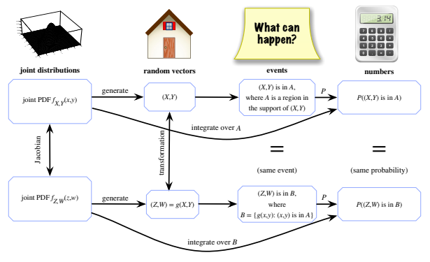
그림 8.12. \((Z,W)=g(X,Y)\)라 하자. 여기서 \(g\)는 특정한 기술적 가정을 만족하는 가역변환이다. 변수변환 공식을 이용하면 \((X,Y)\)와 \((Z,W)\)의 결합확률밀도함수 사이를 오갈 수 있다.
그림의 joint distributions, random vectors, events, numbers는 각각 결합분포, 확률벡터, 사건, 수를 뜻한다. generate는 생성, Jacobian은 야코비안, transformation은 변환, integrate over A/B는 \(A/B\) 위에서 적분을 뜻한다. 두 행의 사건은 같으며 그 확률도 같다.
이 장에서도 다른 많은 장에서처럼 베이즈 정리와 전체 확률의 법칙을 폭넓게 사용했으며, 특히 연속형 또는 혼합형으로 사용했다. 또한 패턴 인식을 이용한 적분 전략을 자주 사용했다. 유효한 확률밀도함수는 모두 적분값이 1이어야 하며 이제 우리는 유효한 확률밀도함수를 많이 알고 있다. 따라서 미적분으로 확률을 푸는 것에 더해 확률을 이용해 미적분을 푸는 데 도움을 받을 수도 있다!
이 장에서 새로 소개한 두 분포는 베타 분포와 감마분포이며, 이들은 이야기와 다른 분포와의 연결이 풍부하다. 베타 분포는 \(\operatorname{Unif}(0,1)\) 분포를 일반화한 것으로 다음과 같은 이야기들이 있다.
- 균등분포의 순서통계량: 독립이고 동일한 \(\operatorname{Unif}(0,1)\) 분포를 따르는 확률변수 \(n\)개의 \(j\)번째 순서통계량은 \(\operatorname{Beta}(j,n-j+1)\) 분포를 따른다.
- 알려지지 않은 확률, 이항분포의 켤레 사전분포: \(p\sim\operatorname{Beta}(a,b)\)이고 \(X\mid p\sim\operatorname{Bin}(n,p)\)이면 \(p\mid X=k\sim\operatorname{Beta}(a+k,b+n-k)\)이다. 이항분포를 따르는 자료에 근거해 갱신한 후에도 \(p\)의 사후분포가 베타 분포 계열 안에 머무르는데, 이 성질을 켤레성이라 한다. 모수 \(a,b\)는 각각 사전 성공 횟수와 사전 실패 횟수로 해석할 수 있다.14
감마분포는 지수분포를 일반화한 것으로 다음과 같은 이야기들이 있다.
- 포아송 과정: 비율이 \(\lambda\)인 포아송 과정에서 \(n\)번의 도착까지의 총 대기 시간은 \(\operatorname{Gamma}(n,\lambda)\) 분포를 따른다. 따라서 감마분포는 음이항분포에 대응하는 연속형 분포이다.
- 알려지지 않은 비율, 포아송 분포의 켤레 사전분포: \(\lambda\sim\operatorname{Gamma}(r_0,b_0)\)이고 \(Y\mid\lambda\sim\operatorname{Pois}(\lambda t)\)이면 \(\lambda\mid Y=y\sim\operatorname{Gamma}(r_0+y,b_0+t)\)이다. 포아송 분포를 따르는 자료에 근거해 갱신한 후에도 \(\lambda\)의 사후분포가 감마분포 계열 안에 머무른다. 모수 \(r_0,b_0\)는 각각 사전에 관측된 성공 횟수와 그 성공들을 기다린 총 시간으로 해석할 수 있다.15
베타 분포와 감마분포는 은행과 우체국 이야기로 연결된다. 이 이야기는 \(X\sim\operatorname{Gamma}(a,\lambda)\), \(Y\sim\operatorname{Gamma}(b,\lambda)\)가 독립이면
\[X+Y\sim\operatorname{Gamma}(a+b,\lambda),\qquad \frac{X}{X+Y}\sim\operatorname{Beta}(a,b)\]
이고 \(X+Y\)와 \(X/(X+Y)\)가 독립이라는 것이다.
5장에서 마지막으로 보았던 분포 사이의 연결 도식을 베타 분포와 감마분포를 포함하도록 갱신하면 다음과 같다. 괄호 안에 표시한 분포들은 괄호 밖의 분포들의 특수한 경우이다.
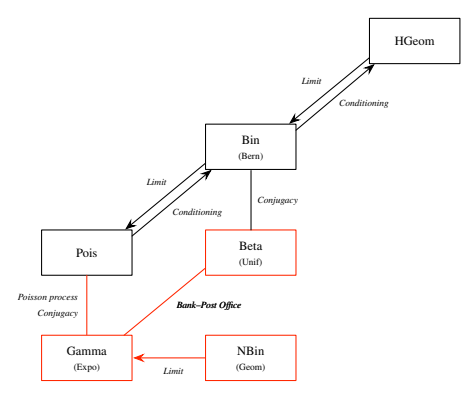
도식의 Limit은 극한, Conditioning은 조건부로 생각하기, Conjugacy는 켤레성, Poisson process는 포아송 과정, Bank–Post Office는 은행과 우체국 이야기를 뜻한다. \(\operatorname{HGeom}\), \(\operatorname{Bin}\), \(\operatorname{Bern}\), \(\operatorname{Pois}\), \(\operatorname{Beta}\), \(\operatorname{Unif}\), \(\operatorname{Gamma}\), \(\operatorname{Expo}\), \(\operatorname{NBin}\), \(\operatorname{Geom}\)은 각각 초기하분포, 이항분포, 베르누이 분포, 포아송 분포, 베타 분포, 균등분포, 감마분포, 지수분포, 음이항분포, 기하분포를 뜻한다.
8.8 R
8.8.1 베타 분포와 감마분포
베타 분포와 감마분포는 R에 구현되어 있다.
dbeta,pbeta,rbeta: \(\operatorname{Beta}(a,b)\) 분포의 확률밀도함수 또는 누적분포함수를 \(x\)에서 계산하려면dbeta(x,a,b)와pbeta(x,a,b)를 사용한다. \(\operatorname{Beta}(a,b)\) 분포에서 실현값 \(n\)개를 생성하려면rbeta(n,a,b)를 사용한다.dgamma,pgamma,rgamma: \(\operatorname{Gamma}(a,\lambda)\) 분포의 확률밀도함수 또는 누적분포함수를 \(x\)에서 계산하려면dgamma(x,a,lambda)또는pgamma(x,a,lambda)를 사용한다. \(\operatorname{Gamma}(a,\lambda)\) 분포에서 실현값 \(n\)개를 생성하려면rgamma(n,a,lambda)를 사용한다.
예를 들어 \(\operatorname{Gamma}(3,2)\) 분포의 평균이 \(3/2\), 분산이 \(3/4\)인지 확인할 수 있다. 이를 위해 rgamma를 사용해 \(\operatorname{Gamma}(3,2)\) 확률변수를 많이 생성한 후 mean과 var를 계산한다.
y <- rgamma(10^5,3,2)
mean(y)
var(y)각각 1.5와 0.75에 가까운 값이 나왔는가?
8.8.2 균등 확률변수의 합성곱
R을 사용하면 \(X,Y\overset{\text{i.i.d.}}{\sim}\operatorname{Unif}(0,1)\)일 때 \(T=X+Y\)의 분포가 삼각형 모양인지 빠르게 확인할 수 있다.
x <- runif(10^5)
y <- runif(10^5)
hist(x+y)히스토그램은 올라갔다가 내려가는 계단처럼 보이며, 삼각형에 대한 이산적인 근사이다.
8.8.3 베이즈의 당구
베이즈의 당구 이야기에서는 흰 공 \(n\)개와 회색 공 1개를 단위구간에 완전히 무작위로 던지고, 회색 공의 왼쪽에 있는 흰 공의 수를 센다. 회색 공의 위치를 \(p\), 그 왼쪽에 있는 흰 공의 수를 \(X\)라 하면
\[ \begin{aligned} p&\sim\operatorname{Unif}(0,1),\\ X\mid p&\sim\operatorname{Bin}(n,p). \end{aligned} \]
이 실험을 매우 많이 수행하면 이 장에서 유도한 \(X\)의 주변 확률질량함수와 \(X=x\)가 주어졌을 때 \(p\)의 사후 확률밀도함수에 관한 결과를 확인할 수 있다. 시뮬레이션 횟수는 nsim이라고 부르자. 흰 공의 수를 나타내는 이름 n과 충돌하지 않도록 하기 위해서다. 흰 공은 10개로 정한다.
nsim <- 10^5
n <- 10\(p\)의 값 \(10^5\)개를 시뮬레이션한 다음, \(p\)가 주어졌을 때 \(X\)의 조건부분포에서 \(10^5\)개의 값을 시뮬레이션한다.
p <- runif(nsim)
x <- rbinom(nsim,n,p)벡터 p 전체를 rbinom에 전달한다는 점에 주목하자. 이는 x의 첫 번째 원소가 p의 첫 번째 원소를 사용해 생성되고, x의 두 번째 원소는 p의 두 번째 원소를 사용해 생성되는 식이라는 뜻이다. 따라서 p의 특정 원소를 조건으로 주면 x의 대응 원소는 이항분포를 따르지만, p의 원소들은 그 자체로 균등분포를 따른다. 모형에서 지정한 것과 정확히 같다.
베이즈의 당구 논증에 따르면 \(X\)의 주변분포는 정수 0부터 \(n\)까지의 이산균등분포여야 한다. 실제로 그런가? x의 히스토그램을 그려 확인할 수 있다. \(X\)의 분포가 이산형이므로 각 막대의 중심이 정수 값에 오도록 히스토그램의 구간 경계를 \(-0.5,0.5,1.5,\ldots\)로 지정한다.
hist(x,breaks=seq(-0.5,n+0.5,1))실제로 모든 히스토그램 막대의 높이가 대략 같으며, 이는 이산균등분포와 부합한다.
이제 \(X=x\)가 주어졌을 때 \(p\)의 사후분포를 살펴보자. R에서는 조건을 주기가 매우 간단하다. \(X\)의 값이 3인 경우에 시뮬레이션된 \(p\)의 값만 살펴보려면 다음과 같이 대괄호를 사용한다: p[x==3]. 특히 이 값들의 히스토그램을 그리면 \(X=3\)이 주어졌을 때 \(p\)의 사후분포가 어떤 모습인지 볼 수 있다. hist(p[x==3])을 실행해 보라.
베타-이항 켤레성에 따르면 실제 사후분포는 \(p\mid X=3\sim\operatorname{Beta}(4,8)\)이다. p[x==3]의 히스토그램을 \(\operatorname{Beta}(4,8)\) 분포에서 시뮬레이션한 값들의 히스토그램과 나란히 그려, 두 그림이 비슷해 보이는지 확인할 수 있다.
par(mfrow=c(1,2))
hist(p[x==3])
hist(rbeta(10^4,4,8))첫 번째 줄은 R에 두 그래프를 나란히 표시하도록 지시하고, 두 번째와 세 번째 줄은 히스토그램을 만든다.
8.8.4 순서통계량의 시뮬레이션
R에서 순서통계량을 시뮬레이션하는 방법은 간단하다. 독립이고 동일한 분포를 따르는 확률변수들을 시뮬레이션한 후 sort를 사용해 오름차순으로 정렬하면 된다. 예를 들어
sort(rnorm(10))은 \(X_1,\ldots,X_{10}\)이 독립이고 동일한 \(\mathcal N(0,1)\) 분포를 따를 때 \(X_{(1)},\ldots,X_{(10)}\)의 실현값 한 벌을 생성한다.
예를 들어 \(X_{(9)}\)의 실현값들을 히스토그램으로 그리고 싶다면 replicate를 사용해야 한다.
order_stats <- replicate(10^4, sort(rnorm(10)))이렇게 하면 행이 10개인 행렬 order_stats가 만들어진다. 행렬의 \(i\)번째 행에는 \(X_{(i)}\)의 실현값 \(10^4\)개가 들어 있다. 이제 행렬의 9번째 행을 선택하기만 하면 \(X_{(9)}\)의 히스토그램을 만들 수 있다.
x9 <- order_stats[9,]
hist(x9)mean(x9)와 var(x9) 같은 요약값도 계산할 수 있다.
8.9 연습문제
ⓢ 표시가 있는 문제의 자세한 풀이는 http://stat110.net에서 볼 수 있다.
8.9.1 변수변환
\(X\sim\operatorname{Expo}(1)\)일 때 \(e^{-X}\)의 확률밀도함수를 구하라.
\(X\sim\operatorname{Expo}(\lambda)\)일 때 \(X^7\)의 확률밀도함수를 구하라.
\(Z\sim\mathcal N(0,1)\)일 때 \(Z^3\)의 확률밀도함수를 구하라.
ⓢ \(Z\sim\mathcal N(0,1)\)일 때 \(Z^4\)의 확률밀도함수를 구하라.
\(Z\sim\mathcal N(0,1)\)일 때 \(|Z|\)의 확률밀도함수를 구하라.
ⓢ \(U\sim\operatorname{Unif}(0,1)\)이라 하자. \(U^2\)과 \(\sqrt U\)의 확률밀도함수를 구하라.
\(U\sim\operatorname{Unif}(0,\pi/2)\)이라 하자. \(\sin(U)\)의 확률밀도함수를 구하라.
- \(X\sim\operatorname{DUnif}(0,1,\ldots,n)\)일 때 \(X^2\)의 분포를 구하라.
- \(X\sim\operatorname{DUnif}(-n,-n+1,\ldots,0,1,\ldots,n)\)일 때 \(X^2\)의 분포를 구하라.
\(X\sim\operatorname{Bern}(p)\)이고 \(a<b\)인 상수 \(a,b\)가 있다고 하자. 확률 \(1-p\)로 \(a\), 확률 \(p\)로 \(b\)와 같아지는 확률변수를 얻도록 \(X\)를 간단히 변환하라.
\(X\sim\operatorname{Pois}(\lambda)\)이고 \(Y\)는 \(X\)가 홀수인 사건의 지시확률변수라 하자. \(Y\)의 확률질량함수를 구하라. 힌트: \(P(Y=0)\)과 \(P(Y=1)\)을 급수로 쓴 뒤 \(k\)가 짝수이면 \((-1)^k=1\), 홀수이면 \((-1)^k=-1\)이라는 사실을 이용하여 \(P(Y=0)-P(Y=1)\)을 구하라.
\(T\)를 연속확률변수, \(V=1/T\)라 하자. 두 누적분포함수가 다음 관계를 만족함을 보여라.
\[F_V(v)=\begin{cases}F_T(0)+1-F_T(1/v),&v>0,\\F_T(0),&v=0,\\F_T(0)-F_T(1/v),&v<0.\end{cases}\]
\(T\)를 i.i.d. \(\mathcal N(0,1)\) 확률변수 \(X,Y\)의 비 \(X/Y\)라 하자. 이는 코시 분포이며 예제 7.1.25에서 보였듯이 확률밀도함수는 \(f_T(t)=1/[\pi(1+t^2)]\)이다.
- 앞 문제의 결과를 이용해 \(1/T\)의 누적분포함수를 구한 뒤 미적분을 이용해 확률밀도함수를 구하라. (함수 \(g(t)=1/t\)는 모든 \(t\ne0\)에서 \(g'(t)<0\)이지만 \(t=0\)에서 정의되지 않고 정의역에서 엄격히 감소하는 함수가 아니므로 일차원 변수변환 공식을 직접 적용할 수 없다.)
- 미적분을 사용하지 않고 140자 이하로 \(1/T\)와 \(T\)가 같은 분포를 따름을 보여라.
\(X,Y\)가 i.i.d. \(\operatorname{Expo}(\lambda)\)이고 \(T=\log(X/Y)\)라 하자. \(T\)의 누적분포함수와 확률밀도함수를 구하라.
\(X,Y\)의 결합확률밀도함수가 \(f_{X,Y}(x,y)\)이고 \((X,Y)\)를 \(T=aX+bY\), \(W=cX+dY\)로 선형변환한다고 하자. 여기서 \(a,b,c,d\)는 \(ad-bc\ne0\)인 상수이다.
- \(f_{T,W}(t,w)\)를 구하라. 답은 \(f_{X,Y}\)로 표현하되 \(t,w\)의 함수로 써야 한다.
- \(T=X+Y\), \(W=X-Y\)인 경우 다음을 보여라.
\[f_{T,W}(t,w)=\frac12 f_{X,Y}\left(\frac{t+w}{2},\frac{t-w}{2}\right).\]
ⓢ 연속확률변수 \(X,Y\)의 결합분포가 구면대칭이라고 하자. 즉 어떤 함수 \(g\)에 대해 결합확률밀도함수가 \(f(x,y)=g(x^2+y^2)\) 꼴이다. \((R,\theta)\)를 \((X,Y)\)의 극좌표라 하자. 그러면 \(R^2=X^2+Y^2\)은 원점으로부터 거리의 제곱이고 \(\theta\in[0,2\pi)\)는 각이며 \(X=R\cos\theta\), \(Y=R\sin\theta\)이다.
- \(R\)과 \(\theta\)가 독립인 이유를 직관적으로 설명하고, \((R,\theta)\)의 결합확률밀도함수를 구해 이를 증명하라.
- \((X,Y)\)가 단위원판 \(\{(x,y):x^2+y^2\le1\}\) 위에서 균등분포를 따르면 \((R,\theta)\)의 결합확률밀도함수는 무엇인가?
- \(X,Y\)가 i.i.d. \(\mathcal N(0,1)\)이면 \((R,\theta)\)의 결합확률밀도함수는 무엇인가?
\(X,Y\)가 i.i.d. \(\mathcal N(0,1)\)이고 \(T=X+Y\), \(W=X-Y\)라 하자. 예제 7.5.8에서 \(T,W\)가 독립인 \(\mathcal N(0,2)\) 확률변수임을 안다. (\((T,W)\)는 다변량 정규분포이고 \(\operatorname{Cov}(T,W)=0\)이다.) 변수변환 정리를 이용해 이 사실을 다른 방법으로 증명하라.
\(X,Y\)가 i.i.d. \(\mathcal N(0,1)\)이고 \((R,\theta)\)가 점 \((X,Y)\)의 극좌표라 하자. 즉 \(X=R\cos\theta\), \(Y=R\sin\theta\), \(R\ge0\), \(\theta\in[0,2\pi)\)이다. \(R^2\)과 \(\theta\)의 결합확률밀도함수를 구하라. 또한 \(R^2\)과 \(\theta\)의 주변분포를 구하고, 전에 공부한 분포라면 이름과 모수를 밝혀라.
\(X,Y\)를 각각 확률밀도함수 \(f_X,f_Y\)를 갖는 독립인 양의 확률변수라 하고 \(T=X/Y\)라 하자.
- 야코비안을 이용해 \(T\)와 \(X\)의 결합확률밀도함수를 구하라.
- \(T\)의 주변 확률밀도함수를 하나의 적분으로 구하라.
\(X,Y\)가 i.i.d. \(\operatorname{Expo}(\lambda)\)이고 \(T=X+Y\), \(W=X/Y\)라 하자.
- \(T,W\)의 결합확률밀도함수를 구하라. 둘은 독립인가?
- \(T,W\) 각각의 주변 확률밀도함수를 구하라.
8.9.2 합성곱
\(U\sim\operatorname{Unif}(0,1)\)과 \(X\sim\operatorname{Expo}(1)\)이 독립이라 하자. \(U+X\)의 확률밀도함수를 구하라.
\(X,Y\)가 i.i.d. \(\operatorname{Expo}(1)\)이라 하자. 합성곱 적분을 이용해 \(L=X-Y\)의 확률밀도함수가 모든 실수 \(t\)에 대해 \(f(t)=\frac12e^{-|t|}\)임을 보여라. 이 분포를 라플라스 분포라고 한다.
독립인 \(X\sim\mathcal N(\mu_1,\sigma^2)\)과 \(Y\sim\mathcal N(\mu_2,\sigma^2)\)에 대해 \(T=X+Y\sim\mathcal N(\mu_1+\mu_2,2\sigma^2)\)임을 합성곱 적분으로 보여라. 계산을 단순하게 하려고 분산이 같다고 가정했다. 적분을 세우기 전에 표준화, 즉 위치-척도 아이디어를 사용하여 표준정규분포인 경우로 줄여도 된다. 힌트: 완전제곱식을 만들어라.
ⓢ \(X,Y\)를 각각 확률밀도함수 \(f_X,f_Y\)를 갖는 독립인 양의 확률변수라 하고 곱 \(T=XY\)를 생각하자. \(T\)의 확률밀도함수를 구해 달라는 요청에 야콥노는 다음과 같이 주장한다.
“합 대신 곱을 쓴 합성곱과 같다. \(T=t\)가 되려면 어떤 \(x\)에 대해 \(X=x\)이고 \(Y=t/x\)여야 한다. 그 확률은 \(f_X(x)f_Y(t/x)\)이므로 이 가능성들을 모두 더하면 \(T\)의 확률밀도함수는 \(\int_0^\infty f_X(x)f_Y(t/x)\,dx\)이다.”
야콥노의 주장을 평가하면서 두 방법으로 \(T\)의 확률밀도함수를 적분 형태로 구하라.
- 연속형 전체 확률의 법칙을 이용해 누적분포함수를 구한 뒤 미분한다. 미분과 적분의 순서 교환이 타당하다고 가정해도 된다.
- \(T=XY\)의 양변에 로그를 취하고 합성곱을 수행한 뒤 다시 변환해 \(T\)의 확률밀도함수를 얻는다.
양의 정수 \(n\)에 대해 \(X,Y\)가 \(\{0,1,\ldots,n\}\) 위의 i.i.d. 이산균등 확률변수라 하자. \(T=X+Y\)의 확률질량함수를 구하라. 힌트: \(P(T=k)\)를 구할 때 \(0\le k\le n\)과 \(n+1\le k\le2n\)을 따로 다루면 도움이 된다. 합성곱 합의 범위에 주의하라.
\(X,Y\)가 i.i.d. \(\operatorname{Unif}(0,1)\)이고 \(W=X-Y\)라 하자.
- 아직 확률밀도함수를 유도하지 말고 \(W\)의 평균과 분산을 구하라.
- 아직 확률밀도함수를 유도하지 말고 \(W\)의 분포가 0을 중심으로 대칭임을 보여라.
- \(W\)의 확률밀도함수를 구하라.
- \(W\)의 확률밀도함수를 이용해 (a), (b)의 결과를 확인하라.
- \(W\)의 분포는 예제 8.2.5에서 유도한 \(X+Y\)의 분포인 삼각분포와 어떤 관계가 있는가? 예를 들어 위치와 척도의 개념을 이용해 정확히 설명하라.
\(X,Y\)가 i.i.d. \(\operatorname{Unif}(0,1)\)이고 \(T=X+Y\)라 하자. 예제 8.2.5에서 합성곱 적분으로 \(T\)의 분포인 삼각분포를 유도했다. \((X,Y)\)는 단위 정사각형 \(\{(x,y):0<x<1,\ 0<y<1\}\) 위에서 균등분포이므로, 그 안의 영역 \(A\)에 대해 \(P((X,Y)\in A)\)를 \(A\)의 넓이로 해석할 수도 있다. 이 생각을 이용해 누적분포함숫값을 넓이로 해석하여 \(T\)의 누적분포함수를 구하라.
\(X,Y,Z\)가 i.i.d. \(\operatorname{Unif}(0,1)\)이고 \(W=X+Y+Z\)라 하자. \(W\)의 확률밀도함수를 구하라. 힌트: \(X+Y\)의 확률밀도함수는 이미 알고 있다. 합성곱 적분의 적분 범위에 주의하고 세 가지 경우를 나누어 생각하라.
8.9.3 베타 분포와 감마분포
ⓢ \(B\sim\operatorname{Beta}(a,b)\)라 하자. (a) 변수변환과 (b) 이야기를 이용한 증명의 두 방법으로 \(1-B\)의 분포를 구하라. 또한 베타 분포가 이항분포의 켤레 사전분포라는 점에서 왜 결과가 타당한지도 설명하라.
ⓢ \(X\sim\operatorname{Gamma}(a,\lambda)\)와 \(Y\sim\operatorname{Gamma}(b,\lambda)\)가 독립이고 \(a,b\)는 정수라 하자. 다음 세 방법으로 \(X+Y\sim\operatorname{Gamma}(a+b,\lambda)\)임을 보여라. (a) 합성곱 적분, (b) 적률생성함수, (c) 이야기를 이용한 증명.
\(B\sim\operatorname{Beta}(a,b)\)라 하자. 패턴 인식을 이용한 적분으로 양의 정수 \(k\)에 대해 \(E(B^k)\)를 구하라. 특히 다음을 보여라.
\[\operatorname{Var}(B)=\frac{ab}{(a+b)^2(a+b+1)}.\]
ⓢ 프레드가 출근하는 버스를 \(X\sim\operatorname{Gamma}(a,\lambda)\)분 기다린 뒤 퇴근하는 버스를 \(Y\sim\operatorname{Gamma}(b,\lambda)\)분 기다린다. \(X,Y\)는 독립이다. 비 \(X/Y\)는 총 대기 시간 \(X+Y\)와 독립인가?
ⓢ F검정은 \(F(m,n)\) 분포를 기반으로 하는 매우 널리 쓰이는 통계적 검정이다. \(F(m,n)\)은 \(X\sim\operatorname{Gamma}(m/2,1/2)\), \(Y\sim\operatorname{Gamma}(n/2,1/2)\)일 때 \((X/m)/(Y/n)\)의 분포이다. \(V\sim F(m,n)\)일 때 \(mV/(n+mV)\)의 분포를 구하라.16
ⓢ 레프토리엄 상점에 고객이 시간당 \(\lambda\)명의 비율인 포아송 과정에 따라 도착한다. \(\lambda\)의 실제 값은 알려져 있지 않으므로 확률변수로 다룬다. \(\lambda\)에 대한 사전 믿음을 \(\lambda\sim\operatorname{Expo}(3)\)으로 표현할 수 있다고 하자. 내일 오후 1시부터 3시 사이 레프토리엄에 도착하는 고객 수를 \(X\)라 하자. \(X=2\)가 관찰되었을 때 \(\lambda\)의 사후 확률밀도함수를 구하라.
ⓢ \(X,Y\)를 기댓값이 유한한 독립인 양의 확률변수라 하자.
- \(E(X/(X+Y))\ne E(X)/E(X+Y)\)인 예를 들고 양변을 정확히 계산하라. 힌트: 생각할 수 있는 가장 단순한 예부터 생각하라!
- \(X,Y\)가 i.i.d.라면 반드시 \(E(X/(X+Y))=E(X)/E(X+Y)\)인가?
- 이제 \(X\sim\operatorname{Gamma}(a,\lambda)\), \(Y\sim\operatorname{Gamma}(b,\lambda)\)라 하자. 모든 실수 \(c>0\)에 대해 다음이 성립함을 미적분을 사용하지 않고 보여라.
\[E\left(\frac{X^c}{(X+Y)^c}\right)=\frac{E(X^c)}{E((X+Y)^c)}.\]
\(X\sim\operatorname{Expo}(\lambda)\), \(\lambda,\gamma>0\)에 대해 \(T=X^{1/\gamma}\)라 하자. 예제 6.5.5에서 설명했듯이 \(T\)는 와이블 분포를 따른다. 이 장에서 LOTUS와 감마함수의 정의를 이용해 \(Y\sim\operatorname{Gamma}(a,\lambda)\)이고 실수 \(c>-a\)이면 다음을 보였다.
\[E(Y^c)=\frac1{\lambda^c}\frac{\Gamma(a+c)}{\Gamma(a)}.\]
이 결과를 이용하여 다음을 보여라.
\[E(T)=\frac{\Gamma(1+1/\gamma)}{\lambda^{1/\gamma}},\qquad \operatorname{Var}(T)=\frac{\Gamma(1+2/\gamma)-[\Gamma(1+1/\gamma)]^2}{\lambda^{2/\gamma}}.\]
앨리스가 창구 직원이 두 명인 우체국에 들어간다. 두 직원 모두 손님을 응대하는 중이지만 앨리스가 다음 차례이다. 왼쪽 직원이 손님 한 명을 응대하는 데 걸리는 시간은 \(\operatorname{Expo}(\lambda_1)\)이고 오른쪽 직원의 응대시간은 \(\operatorname{Expo}(\lambda_2)\)이다. 왼쪽 직원이 현재 손님의 응대를 마칠 때까지의 시간을 \(T_1\)이라 하고 오른쪽 직원에 대해서도 같은 방식으로 \(T_2\)를 정의하자.17
- \(\lambda_1=\lambda_2\)이면 \(T_1/T_2\)는 \(T_1+T_2\)와 독립인가? 힌트: \(T_1/T_2=[T_1/(T_1+T_2)]/[T_2/(T_1+T_2)]\)임을 이용하라.
- \(P(T_1<T_2)\)를 구하라. 이 소문항과 다음 소문항에서는 \(\lambda_1=\lambda_2\)라고 가정하지 말되 그 특수한 경우에 답이 타당한지는 확인하라.
- 앨리스가 응대를 마치자마자 떠난다고 할 때 우체국에서 보내는 전체 시간의 기댓값을 구하라.
\(j\)가 양의 정수이고 \(X\sim\operatorname{Pois}(\lambda t)\), \(Y\sim\operatorname{Gamma}(j,\lambda)\)라 하자. 포아송 과정에 관한 이야기를 이용해 \(P(X\ge j)=P(Y\le t)\)임을 보여라.
어느 경치 좋은 공원에 방문자가 시간당 \(\lambda\)명의 비율인 포아송 과정에 따라 도착한다. 프레드는 다른 누구와도 독립적으로 막 도착했으며 \(\operatorname{Expo}(\lambda_2)\)시간 동안 머무를 것이다. 프레드가 있는 동안 도착하는 다른 방문자 수의 분포를 구하라.
- \(a,b\)를 양의 실수로 하고 \(p\sim\operatorname{Beta}(a,b)\)라 하자. \(E(p^2(1-p)^2)\)를 완전히 간단히 구하라. 최종 답에 \(\Gamma\)가 나타나서는 안 된다.
두 팀 A와 B가 곧 경기를 한다. 다섯 게임을 치르고 과반수 게임에서 이기는 팀이 승자로 선언된다. \(p\)가 주어졌을 때 각 게임의 결과는 서로 독립이며 A가 이길 확률은 \(p\), B가 이길 확률은 \(1-p\)이다. 하지만 \(p\)를 모르므로 데이터 관찰 전에는 \(p\sim\operatorname{Unif}(0,1)\)인 확률변수로 모형화한다.
\(p\)를 더 알아보기 위해 두 팀의 과거 경기 기록을 살펴보니 시간순 결과가 AAABBAABAB였다. \(p\)의 실제 값은 시간에 따라 변하지 않았고 이번 경기에서도 같지만, \(p\)에 대한 믿음은 시간에 따라 바뀔 수 있다고 가정한다.
- 과거 기록이 주어졌을 때 \(p\)의 사후분포는 결과의 구체적인 순서에 의존하는가, 아니면 기록된 10게임 중 A가 정확히 6게임을 이겼다는 사실에만 의존하는가? 설명하라.
- 과거 데이터가 주어졌을 때 \(p\)의 사후분포를 구하라.
(c)의 사후분포가 새로운 사전분포가 되고 이제 경기가 시작되려 한다!
- \(p\)를 조건으로 삼았을 때 이번 경기 첫 게임에서 A가 이기는 지시확률변수와 두 번째 게임에서 A가 이기는 지시확률변수는 양의 상관, 비상관, 음의 상관 중 무엇인가? 과거 데이터만을 조건으로 삼으면 어떠한가?
- 과거 데이터가 주어졌을 때 다섯 번째 게임에 들어갈 때까지 경기의 승자가 아직 결정되지 않을 확률의 기댓값은 얼마인가? 이에 대한 불확실성을 반영하기 위해 이 확률을 숫자가 아닌 확률변수로 보라.
어느 공학자가 제품의 신뢰성을 연구하기 위해 \(n\)번의 시행을 연속해서 수행한다. 신뢰성은 성공 확률로 정의한다. 각 시행에서 제품은 확률 \(p\)로 성공하고 확률 \(1-p\)로 실패한다. 시행들은 \(p\)가 주어졌을 때 조건부 독립이다. \(p\)는 알려져 있지 않다. 그렇지 않다면 연구할 필요가 없을 것이다! 공학자는 베이즈 방식으로 사전분포를 \(p\sim\operatorname{Unif}(0,1)\)로 둔다.
원하는 신뢰성 수준을 \(r\), 그에 대응하는 신뢰 수준을 \(c\)라 하자. 즉 데이터가 주어졌을 때 실제 신뢰성 \(p\)가 적어도 \(r\)일 확률이 \(c\)라는 뜻이다. 예를 들어 \(r=0.9\), \(c=0.95\)이면 데이터가 주어졌을 때 제품 신뢰성이 적어도 90%라고 95% 확신할 수 있다. 제품이 \(n\)번 모두 성공하는 것을 관찰했다고 하자. \(r\)의 함수로서 \(c\)를 나타내는 간단한 식을 구하라.
8.9.4 순서통계량
ⓢ \(X\sim\operatorname{Bin}(n,p)\), \(B\sim\operatorname{Beta}(j,n-j+1)\)라 하자. 여기서 \(n\)은 양의 정수이고 \(j\)는 \(j\le n\)인 양의 정수이다. 순서통계량에 관한 이야기를 이용해 \(P(X\ge j)=P(B\le p)\)임을 보여라. 이는 연속확률변수 \(B\)의 누적분포함수가 이산확률변수 \(X\)의 누적분포함수와 밀접한 관련이 있음을 보여 주며, 베타 분포와 이항분포 사이의 또 다른 연결이다.
i.i.d. 연속확률변수 \(X,Y,Z\)에 대해 다음을 보여라.
\[P(X<\min(Y,Z))+P(Y<\min(X,Z))+P(Z<\min(X,Y))=1.\]
모든 \(x\in[0,1]\) 및 \(j\le n\)인 양의 정수 \(j,n\)에 대해 다음을 미적분을 사용하지 않고 보여라.
\[\int_0^x\frac{n!}{(j-1)!(n-j)!}t^{j-1}(1-t)^{n-j}\,dt =\sum_{k=j}^n\binom nk x^k(1-x)^{n-k}.\]
\(X_1,\ldots,X_n\)이 확률밀도함수 \(f\)와 엄격히 증가하는 누적분포함수 \(F\)를 갖는 i.i.d. 연속확률변수라 하자. i.i.d. \(\operatorname{Unif}(0,1)\) 확률변수 \(n\)개의 \(j\)번째 순서통계량이 \(\operatorname{Beta}(j,n-j+1)\)임은 알지만 \(X_1,\ldots,X_n\)의 \(j\)번째 순서통계량의 분포에 대한 공식과 유도를 잊었다고 하자. 변수변환을 이용해 \(X_{(j)}\)의 확률밀도함수를 빠르게 복원하는 방법을 보여라.
ⓢ \(X,Y\)가 독립인 \(\operatorname{Expo}(\lambda)\) 확률변수이고 \(M=\max(X,Y)\)라 하자. \(M\)이 \(X+\frac12Y\)와 같은 분포를 따름을 두 가지 방법으로 보여라. (a) 미적분 사용, (b) 지수분포의 무기억성과 다른 성질을 떠올리기.
ⓢ (a) \(X,Y\)가 누적분포함수 \(F(x)\)와 확률밀도함수 \(f(x)\)를 가진 i.i.d. 연속확률변수이면 \(M=\max(X,Y)\)의 확률밀도함수는 \(2F(x)f(x)\)이다. 이제 \(X,Y\)가 이산형 i.i.d.이며 누적분포함수 \(F(x)\)와 확률질량함수 \(f(x)\)를 갖는다고 하자. \(M\)의 확률질량함수가 왜 \(2F(x)f(x)\)가 아닌지 말로 설명하라.
- \(X,Y\)가 i.i.d. \(\operatorname{Bern}(1/2)\)이고 \(M=\max(X,Y)\), \(L=\min(X,Y)\)라 하자. \(M,L\)의 결합 확률질량함수 \(P(M=a,L=b)\)와 각각의 주변 확률질량함수를 구하라.
\(X_1,X_2,\ldots\)가 누적분포함수 \(F\)를 가진 i.i.d. 확률변수이고 \(M_n=\max(X_1,X_2,\ldots,X_n)\)이라 하자. 각 \(n\ge1\)에 대해 \(M_n\)과 \(M_{n+1}\)의 결합분포를 구하라.
ⓢ \(X_1,X_2,\ldots,X_n\)이 누적분포함수 \(F\)와 확률밀도함수 \(f\)를 가진 i.i.d. 확률변수라 하자. 그림을 그리고 생각하여 \(1\le i<j\le n\)에 대한 순서통계량 \(X_{(i)}\)와 \(X_{(j)}\)의 결합확률밀도함수를 구하라.
ⓢ 두 여성이 같은 예정일에 출산을 앞두고 있다. 시간축에서 예정일이 시작되는 순간을 시각 0으로 정의하자. 각 여성이 출산하는 시각은 0을 중심으로 하고 표준편차가 8일인 정규분포를 따른다고 하자. 두 출산 시각은 i.i.d.이다. 두 출산 중 첫 번째가 일어난 시각을 \(T\)(단위: 일)라 하자.
- \(E(T)=-8/\sqrt\pi\)임을 보여라. 힌트: 임의의 두 확률변수 \(X,Y\)에 대해 \(\max(X,Y)+\min(X,Y)=X+Y\), \(\max(X,Y)-\min(X,Y)=|X-Y|\)이다. 예제 7.2.3은 두 i.i.d. \(\mathcal N(0,1)\) 확률변수 사이 거리의 기댓값을 유도한다.
- \(\operatorname{Var}(T)\)를 적분을 이용해 표현하라. 이 소문항에서는 답을 간단히 하지 않아도 되지만 결과가 \(64(1-1/\pi)\)임을 보일 수 있다.
연속분포에서 i.i.d.로 얻은 확률변수 \(Y_1,Y_2,\ldots,Y_n\)을 곧 관측할 것이다. 같은 분포를 따르는 독립적인 미래 관측값 \(Y_{\mathrm{new}}\)를 예측해야 한다. 분포는 알려져 있지 않으므로 \(Y_{\mathrm{new}}\)의 분포 대신 \(Y_1,Y_2,\ldots,Y_n\)을 이용해 예측한다. 예측할 때 숫자 하나만 제시하지 않고, \(Y_{\mathrm{new}}\)를 포함한다는 ‘높은 신뢰’를 갖는 예측구간을 제시하고자 한다. 이를 위한 한 가지 접근은 순서통계량을 이용하는 것이다.
- \(1\le j<k\le n\)인 고정된 \(j,k\)에 대해 \(P(Y_{\mathrm{new}}\in[Y_{(j)},Y_{(k)}])\)를 구하라. 힌트: 대칭성에 의해 \(Y_1,\ldots,Y_n,Y_{\mathrm{new}}\)의 모든 순서가 같은 가능성을 갖는다.
- \(n=99\)라 하자. \(Y_1,\ldots,Y_n\)의 함수로서 \(Y_{\mathrm{new}}\)를 포함할 확률이 0.95인 예측구간을 구성하라.
\(n\)이 홀수이고 \(X_1,\ldots,X_n\)이 i.i.d. 연속확률변수라 하자. \(X_i\)들의 표본중앙값의 분포에 대한 중앙값이 \(X_i\)들의 분포의 중앙값과 같음을 보여라. 힌트: 문제를 주의 깊게 읽는 것부터 시작하라. 6장에서 정의한 분포의 중앙값과 이 장에서 정의한 확률변수 모음의 표본중앙값을 구별하는 것이 매우 중요하다. 물론 둘은 밀접하게 관련되어 있다. i.i.d. 확률변수의 표본중앙값은 그 확률변수들이 추출된 분포의 실제 중앙값을 추정하는 매우 자연스러운 방법이다. 나타날 수 있는 합을 계산하는 두 가지 접근은 (i) 1장의 이야기를 이용한 증명의 첫 예제와 첫 연습문제를 사용하는 것, 또는 (ii) 이항분포의 이야기에 따라 \(Y\sim\operatorname{Bin}(n,1/2)\)이면 \(n-Y\sim\operatorname{Bin}(n,1/2)\)임을 사용하는 것이다.
8.9.5 종합 연습
- \(U_1,U_2,\ldots,U_n\)이 i.i.d. \(\operatorname{Unif}(0,1)\)이고 모든 \(j\)에 대해 \(X_j=-\log(U_j)\)라 하자.
- \(X_j\)의 분포를 구하라. 이름은 무엇인가?
- 곱 \(U_1U_2\cdots U_n\)의 분포를 구하라. 힌트: 먼저 로그를 취하라.
- ⓢ DNA 서열은 A,C,T,G 네 글자로 이루어진 알파벳의 수열로 나타낼 수 있다. 글자들이 독립이고 A,C,T,G가 나올 확률이 각각 \(p_1,p_2,p_3,p_4\)인 무작위 서열을 만든다고 하자.18
- 길이가 115인 DNA 서열에서 “CATCAT”이라는 표현이 나타나는 횟수의 기댓값을 \(p_j\)로 나타내라. 예를 들어 “CATCATCAT”에는 두 번 나타난 것으로 센다.
- 글자를 한 번에 하나씩 생성할 때 첫 번째 A가 첫 번째 C보다 먼저 나타날 확률을 \(p_j\)로 나타내라.
- 이 소문항에서는 \(p_j\)를 모른다고 가정한다. 데이터를 관찰하기 전에 \(p_2\)를 \(\operatorname{Unif}(0,1)\) 확률변수로 취급하고, 관찰한 처음 세 글자가 “CAT”이라고 하자. 이 정보가 주어졌을 때 다음 글자가 C일 확률은 얼마인가?
- ⓢ 각 시행의 성공 확률이 \(p\)인 독립 베르누이 시행들을 생각하자. 총 \(r\)번 성공하기 전에 발생한 실패 횟수를 \(X\)라 하자.
- 적률생성함수를 이용해 \(p\to0\)일 때 \(\frac{p}{1-p}X\)의 분포가 어떻게 되는지 구하라. 극한 분포의 확률밀도함수는 무엇이며, 앞에서 공부한 분포라면 이름과 모수는 무엇인가? 힌트: 먼저 \(\operatorname{Geom}(p)\)의 적률생성함수를 구한 다음 \(\frac{p}{1-p}X\)의 적률생성함수를 구하라. \(Y_n\)의 적률생성함수가 \(Y\)의 적률생성함수로 수렴하면 \(Y_n\)의 누적분포함수는 \(Y\)의 누적분포함수로 수렴한다는 사실을 이용하라.
- (a)의 결과가 왜 타당한지 직관적으로 설명하라.
옮긴이 주: 원문의 미분 가능성과 엄격한 단조성만으로는 변환된 분포가 반드시 밀도를 갖는다는 결론까지 보장되지 않는다. 충분조건의 한 예는 해당 구간에서 \(g\)가 연속적으로 미분 가능하고 \(g'\)가 0이 아닌 것이다. 표시된 역함수의 도함수도 존재하는 범위에서 써야 하며, 더 일반적인 조건 아래에서는 특이한 점에서 밀도가 무한할 수 있고 공식은 일반적으로 거의 모든 점에서 이해한다. 또한 지지집합의 경계는 지지집합의 정의에 따라 닫힘을 취해야 할 수 있다.↩︎
옮긴이 주: 원문의 미분 가능성과 엄격한 단조성만으로는 변환된 분포가 반드시 밀도를 갖는다는 결론까지 보장되지 않는다. 충분조건의 한 예는 해당 구간에서 \(g\)가 연속적으로 미분 가능하고 \(g'\)가 0이 아닌 것이다. 표시된 역함수의 도함수도 존재하는 범위에서 써야 하며, 더 일반적인 조건 아래에서는 특이한 점에서 밀도가 무한할 수 있고 공식은 일반적으로 거의 모든 점에서 이해한다. 또한 지지집합의 경계는 지지집합의 정의에 따라 닫힘을 취해야 할 수 있다.↩︎
옮긴이 주: 여기서 \(E|X|=+\infty\)는 비음수 확률변수의 확장 기댓값을 사용한 표현이다. \(E(X)\) 자체는 양과 음의 부분이 모두 발산하여 존재하지 않는다.↩︎
집합 \(C\subset\mathbb R^n\)이 열린 집합이라는 것은 각 \(\mathbf x\in C\)에 대해 \(\mathbf x\)와의 거리가 \(\epsilon\)보다 작은 모든 점을 \(C\)에 포함시키는 \(\epsilon>0\)이 존재한다는 뜻이다. 때로는 \(A_0=B_0=\mathbb R^n\)으로 놓지만, 자주 \(g\)의 정의역과 치역에 더 유연함이 필요하다. 예를 들어 \(n=2\)이고 \(X_1,X_2\)의 지지집합이 \((0,\infty)\)이면 \(\mathbb R^2\) 전체 대신 열린 집합 \(A_0=(0,\infty)\times(0,\infty)\)에서 작업하고 싶을 수 있다.↩︎
옮긴이 주: 순방향 야코비 행렬을 사용하는 이 등식에는 \(g\)가 해당 위치에서 미분 가능하고 그 행렬이 가역이라는 조건도 필요하다.↩︎
옮긴이 주: 각도를 \((0,2\pi)\)로 제한한 변환의 치역에는 양의 \(x\)축이 포함되지 않는다. 그 축과 원점은 면적이 0인 집합이므로 밀도는 거기에서 임의로 정의해도 분포가 달라지지 않는다.↩︎
옮긴이 주: 확률밀도함수는 영집합에서의 값이 달라도 같은 분포를 나타낸다. 합성곱 적분은 밀도의 한 버전을 제공하며 등식은 일반적으로 거의 모든 \(t\)에서 이해한다.↩︎
옮긴이 주: 적분과 미분의 교환을 모든 점에서 당연하게 여길 수는 없다. 적절한 조건 아래 또는 거의 모든 점에서의 밀도 등식으로 해석하며, 아래의 변수변환 유도도 이를 뒷받침한다.↩︎
옮긴이 주: 이 도착 횟수 해석은 \(a\)가 양의 정수일 때 적용한다. 감마분포 자체는 모든 실수 \(a>0\)에 대해 정의된다.↩︎
옮긴이 주: 임의의 \(y=0,1,2,\ldots\)에 대해 \(Y=y\)를 조건으로 하는 설명은 \(t>0\)을 가정한다. \(t=0\)이면 \(Y=0\)이 거의 확실하고 \(y>0\)인 사건은 확률이 0이다. 사전 모수 해석은 실제 과거 자료가 반드시 있었다는 뜻이 아니라 모수의 갱신 형태를 이해하는 비유이다.↩︎
이 용어는 때때로 혼란을 일으킨다. 통계학에서 자료의 함수는 무엇이든 통계량이라 한다. \(X_1,\ldots,X_n\)이 자료라면 \(\min(X_1,\ldots,X_n)\)도 통계량이고 \(\max(X_1,\ldots,X_n)\)도 통계량이다. 자료를 작은 값부터 큰 값까지 순서대로 정렬하여 얻으므로 순서통계량이라고 부른다.↩︎
옮긴이 주: 원문은 결합밀도를 유도하겠다고 예고하지만 이 절에 그 유도가 나오지 않는다. 위 i.i.d. 연속 가정에서 결합밀도는 \(x_1<\cdots<x_n\)에서 \(n!\prod_{i=1}^n f(x_i)\)이고 그 밖에서는 0이다.↩︎
옮긴이 주: 변수변환 공식에는 가역성과 정칙성 등 적절한 가정이 필요하다. 8.1절에서 설명한 바와 같이 밀도의 등식은 일반적으로 거의 모든 곳에서 이해한다.↩︎
옮긴이 주: \(a,b\)를 사전의 유사 성공·실패 횟수로 부르는 것은 기준 선택에 따른 해석이다. 8.3절처럼 균등한 \(\operatorname{Beta}(1,1)\) 사전을 출발점으로 잡으면 추가된 성공·실패 횟수는 각각 \(a-1,b-1\)이다. 모수는 양의 실수일 수 있으며 반드시 실제 관측 횟수일 필요는 없다.↩︎
옮긴이 주: \(r_0,b_0\)는 감마 사전분포의 모수로서 사전의 유사 사건 수와 노출 시간으로 해석할 수 있다. 실제 관측 수와 시간을 그대로 뜻해야 하는 것은 아니다.↩︎
옮긴이 주: 통상적인 F분포의 정의에서는 두 감마 확률변수 \(X,Y\)가 독립이다.↩︎
옮긴이 주: 통상적인 풀이에는 두 직원의 응대시간과 앨리스의 이후 응대시간이 서로 독립이라는 가정이 필요하다.↩︎
옮긴이 주: (c)의 사후분포를 구하려면 \(p_2\)의 사전분포뿐 아니라 다른 글자 확률들과의 사전적 관계도 정해야 한다. 예를 들어 \(p_2\)가 주어졌을 때 나머지 글자들의 상대 비율이 \(p_2\)와 독립이라는 모형을 사용할 수 있다.↩︎